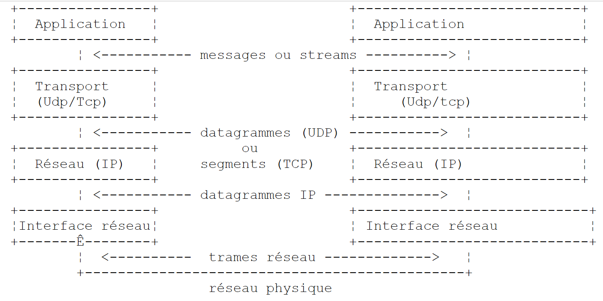
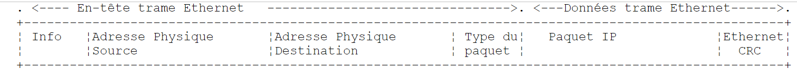
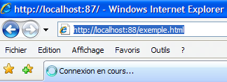
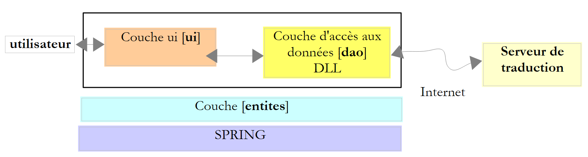
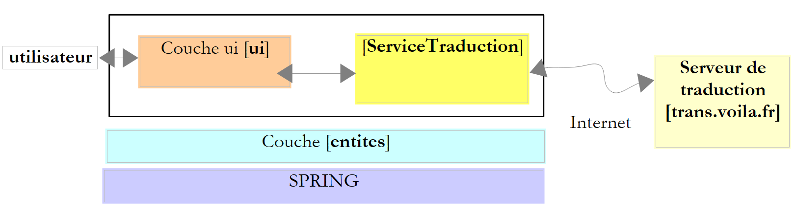
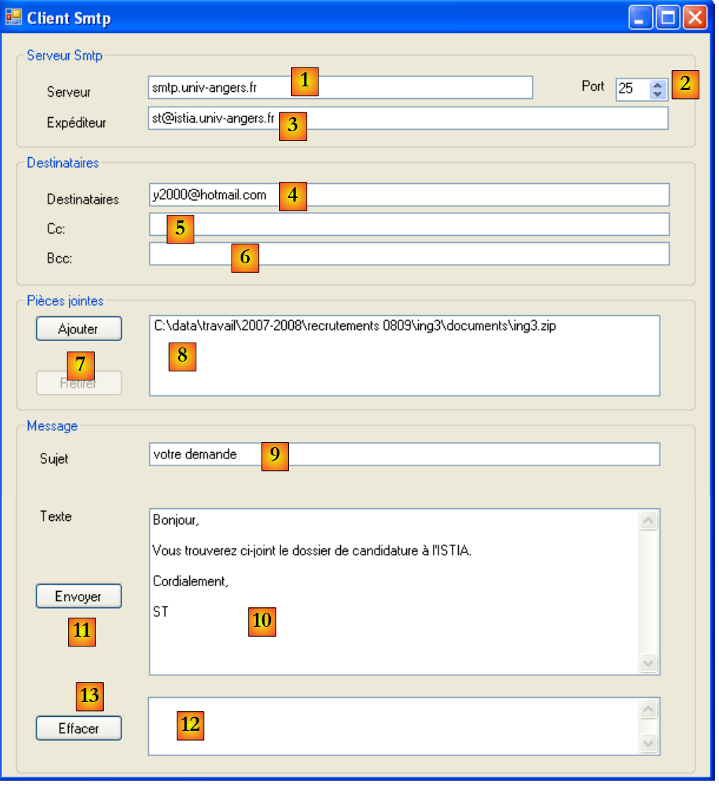
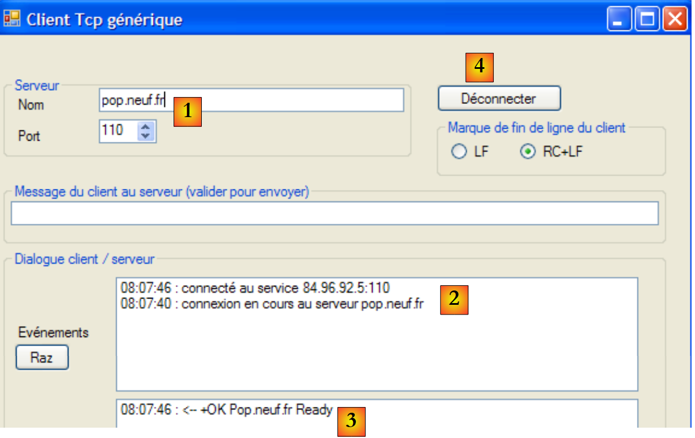
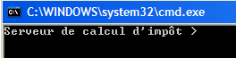
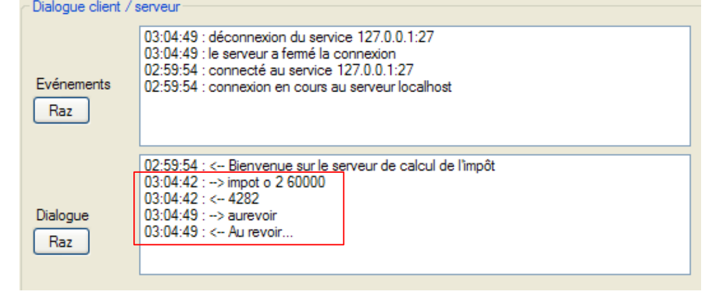
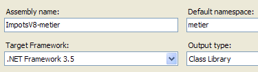

11. Programação na Internet
11.1. Geral
11.1.1. Os protocolos da Internet
Apresentamos aqui uma introdução aos protocolos de comunicação da Internet, também conhecidos como o conjunto de protocolos TCP/IP (Transfer Control Protocol / Internet Protocol), cujo nome deriva dos dois protocolos principais. Pode ser útil para o leitor ter uma compreensão geral de como funcionam as redes e, em particular, dos protocolos TCP/IP, antes de abordar a construção de aplicações distribuídas. O texto que se segue é uma tradução parcial de um texto encontrado no documento «Lan Workplace for Dos - Administrator's Guide» da NOVELL, documento do início dos anos 90.
O conceito geral de criação de uma rede de computadores heterogéneos tem origem na investigação realizada pela DARPA (Defense Advanced Research Projects Agency) nos EUA. A DARPA desenvolveu o conjunto de protocolos conhecido como TCP/IP, que permite que máquinas heterogéneas comuniquem entre si. Estes protocolos foram testados numa rede chamada ARPAnet, que mais tarde se tornou a INTERNET. Os protocolos TCP/IP definem formatos e regras de transmissão e receção que são independentes da organização da rede e do hardware utilizado.
A rede concebida pela DARPA e gerida pelos protocolos TCP/IP é uma rede DARPA de comutação de pacotes. Uma rede deste tipo transmite informação pela rede, em pequenos pedaços chamados pacotes. Assim, se um computador transmitir um ficheiro de grandes dimensões, este será dividido em pedaços mais pequenos, que serão enviados pela rede para serem recompostos no seu destino. O TCP/IP define o formato destes pacotes, ou seja:
- origem do pacote
- destino
- comprimento
- tipo
11.1.2. O modelo OSI
Os protocolos TCP/IP seguem, em linhas gerais, o modelo de rede aberta denominado OSI (Modelo de Referência para Interconexão de Sistemas Abertos), definido pela ISO (Organização Internacional de Normalização). Este modelo descreve uma rede ideal em que a comunicação entre máquinas pode ser representada por um modelo de sete camadas:
 |
Cada camada recebe serviços da camada inferior e oferece os seus próprios serviços à camada superior. Suponha que duas aplicações em máquinas diferentes, A e B, pretendem comunicar: fazem-no na camada de Aplicação. Não precisam de conhecer todos os detalhes do funcionamento da rede: cada aplicação entrega a informação que pretende transmitir à camada inferior: a camada de Apresentação. A aplicação apenas precisa de conhecer as regras para interagir com a camada de Apresentação.
Depois de a informação ter sido transferida da Apresentação para a Sessão e assim sucessivamente, até chegar ao suporte físico e ser transmitida fisicamente para o computador de destino. Aí, é submetida a um processo inverso ao que sofreu no computador de origem.
Em cada camada, o processo de envio responsável pelo envio da informação envia-a para um processo de receção na outra máquina pertencente à mesma camada que ele próprio. Faz-o de acordo com certas regras conhecidas como a camada de protocolo. Isto dá-nos o seguinte diagrama de comunicação final:
 |
A função das diferentes camadas é a seguinte:
Assegura a transmissão de bits num meio físico. Esta camada inclui equipamentos terminais de processamento de dados (E.T.T.D.), tais como um terminal ou computador, bem como equipamentos de terminação de circuitos de dados (E.T.C.D.), tais como um modulador/demodulador, multiplexador ou concentrador. Os pontos de interesse a este nível são:
| |
Oculta as características da camada física. Deteta e corrige erros de transmissão. | |
Gere o caminho percorrido pela informação enviada pela rede. Isto denomina-se encaminhamento: determinar o percurso que um elemento de informação deve seguir para chegar ao seu destino. | |
Permite a comunicação entre duas aplicações, enquanto as camadas anteriores permitiam apenas a comunicação entre máquinas. Um serviço prestado por esta camada é a multiplexação: a camada de transporte pode utilizar a mesma ligação de rede (de máquina para máquina) para transmitir informações pertencentes a várias aplicações. | |
Esta camada contém serviços que permitem a uma aplicação abrir e manter uma sessão de trabalho numa máquina remota. | |
O seu objetivo é padronizar a representação de dados em diferentes máquinas. Desta forma, os dados da máquina A serão «preparados» pela camada de Apresentação da máquina A, num formato padrão, antes de serem enviados pela rede. Assim que chegarem à máquina B, que os reconhecerá graças ao seu formato padrão, serão preparados de outra forma para que a aplicação da máquina B os possa reconhecer. | |
Neste nível, encontramos aplicações que estão geralmente próximas do utilizador, tais como o e-mail e a transferência de ficheiros. |
11.1.3. O modelo TCP/IP
O modelo OSI é um modelo ideal que ainda não foi concretizado. O conjunto de protocolos TCP/IP aproxima-se dele da seguinte forma:
 |
Camada física
Para redes locais, utilizamos geralmente Ethernet ou Token-Ring. Apresentamos aqui apenas a tecnologia Ethernet.
Ethernet
Este é o nome dado a uma tecnologia de LAN com comutação de pacotes inventada no PARC da Xerox no início da década de 1970 e padronizada pela Xerox, Intel e Digital Equipment em 1978. A rede consiste fisicamente num cabo coaxial com um diâmetro de cerca de 1,27 cm e um comprimento máximo de 500 m. Pode ser estendida por meio de repetidores, não podendo duas máquinas estar separadas por mais de dois repetidores. O cabo é passivo: todos os elementos ativos encontram-se nas máquinas ligadas ao cabo. Cada máquina está ligada ao cabo por uma placa de acesso à rede que inclui:
- um transmissor (transceptor) que deteta a presença de sinais no cabo e converte sinais analógicos em digitais e vice-versa.
- um acoplador que recebe sinais digitais do transmissor e os transmite ao computador para processamento, ou vice-versa.
As principais características da tecnologia Ethernet são as seguintes:
- Capacidade de 10 megabits por segundo.
- Topologia em barramento: todas as máquinas estão ligadas ao mesmo cabo
 |
- Rede de difusão - Uma máquina transmissora transfere informações pelo cabo com o endereço da máquina de destino. Todas as máquinas ligadas recebem então esta informação, e apenas aquela a quem se destina a retém.
- O método de acesso é o seguinte: o transmissor que pretende transmitir escuta o cabo — deteta então a presença ou ausência de uma onda portadora, o que significaria que está em curso uma transmissão. Trata-se do CSMA (Carrier Sense Multiple Access). Na ausência de uma onda portadora, um transmissor pode decidir transmitir por sua vez. Vários transmissores podem tomar essa decisão. Os sinais transmitidos misturam-se: dizemos que há uma colisão. O transmissor deteta esta situação: ao mesmo tempo que transmite no cabo, escuta o que está efetivamente a passar por ele. Se detetar que a informação que transita no cabo não é a que transmitiu, deduz que há uma colisão e interrompe a transmissão. Os outros transmissores farão o mesmo. Cada um retomará a transmissão após um intervalo aleatório, dependendo de cada transmissor. Esta técnica é chamada de CD (Collision Detect). O método de acesso é chamado de CSMA/CD.
- Endereçamento de 48 bits. Cada máquina possui um endereço, denominado endereço físico, que está gravado na placa que a liga ao cabo. Este endereço é chamado de Ethernet da máquina.
Camada de rede
Esta camada inclui os protocolos IP, ICMP, ARP e RARP.
Envia pacotes entre dois nós de rede | |
O ICMP permite a comunicação entre o programa do protocolo IP de uma máquina e o de outra. É, portanto, um protocolo de troca de mensagens dentro do protocolo IP. | |
mapeia o endereço da máquina na Internet para o endereço físico da máquina | |
mapeia o endereço físico da máquina para o endereço de Internet da máquina |
Camadas de transporte/sessão
Esta camada inclui os seguintes protocolos:
Garante a transferência fiável de informações entre dois clientes | |
Garante a entrega não fiável de informações entre dois clientes |
Camadas de Aplicação/Apresentação/Sessão
Existem aqui vários protocolos:
Emulador de terminal que permite à máquina A ligar-se à máquina B como um terminal | |
permite a transferência de ficheiros | |
permite a transferência de ficheiros | |
permite a troca de mensagens entre utilizadores da rede | |
transforma um nome de máquina num endereço de máquina na Internet | |
criado pela Sun Microsystems, especifica um padrão de representação de dados independente da máquina | |
também definido pela Sun, é um protocolo de comunicação entre aplicações remotas, independente da camada de transporte. Este protocolo é importante: dispensa o programador de conhecer os detalhes da camada de transporte e torna as aplicações portáteis. Este protocolo baseia-se no protocolo XDR | |
também definido pela Sun, este protocolo permite que uma máquina «veja» o sistema de ficheiros de outra. Baseia-se no protocolo RPC anterior |
11.1.4. Como funcionam os protocolos da Internet
As aplicações desenvolvidas no ambiente TCP/IP utilizam geralmente vários dos protocolos deste ambiente. Um programa de aplicação comunica com a camada de protocolo mais elevada. Esta transmite a informação à camada inferior, e assim sucessivamente até chegar ao meio físico. Aqui, a informação é transferida fisicamente para a máquina, onde passa novamente pelas mesmas camadas, desta vez na direção oposta, até chegar à aplicação para a qual a informação foi enviada. O diagrama seguinte mostra o percurso da informação:
 |
Vejamos um exemplo: a aplicação FTP, definida na secção «Aplicações», que permite a transferência de ficheiros entre máquinas.
- A aplicação envia uma sequência de bytes para ser transmitida à camada de transporte.
- A camada de transporte divide esta sequência de bytes em segmentos TCP e adiciona o número do segmento ao início de cada segmento. Os segmentos são passados para a camada de rede, regida pelo IP.
- A camada IP cria um pacote que encapsula o segmento TCP recebido. No cabeçalho deste pacote, coloca os endereços de Internet das máquinas de origem e de destino. Determina também o endereço físico da máquina de destino. Tudo isto é transmitido para a ligação de dados e a ligação física, ou seja, a placa de rede que liga a máquina à rede física.
- Aqui, o pacote IP é, por sua vez, encapsulado num quadro e enviado ao seu destinatário através do cabo.
- Na máquina receptora, a camada de ligação de dados e física faz o oposto: desencapsula o pacote IP da trama física e passa-o para a camada IP.
- A camada IP verifica se o pacote está correto: calcula uma soma com base nos bits recebidos (soma de verificação), que deve constar no cabeçalho do pacote. Se não for esse o caso, o pacote é rejeitado.
- Se o pacote for declarado correto, a camada IP desencapsula o segmento TCP nele contido e o passa para a camada de transporte IP.
- A camada de transporte, a camada TCP no nosso exemplo, examina o número do segmento para restaurar a ordem correta dos segmentos.
- Calcula também uma soma de verificação para o segmento TCP. Se for considerada correta, a camada TCP envia um aviso de receção à máquina de origem; caso contrário, o segmento TCP é rejeitado.
- Tudo o que resta à camada TCP é transmitir a parte de dados do segmento para a aplicação de destino na camada superior.
11.1.5. Resolução de problemas na Internet
Um nó de uma rede pode ser um computador, uma impressora inteligente, um servidor de ficheiros, na verdade qualquer coisa que possa comunicar utilizando os protocolos TCP/IP. Cada nó tem um endereço físico cujo formato depende do tipo de rede. Numa rede Ethernet, o endereço físico é codificado em 6 bytes. Um endereço de rede X25 é um número de 14 dígitos.
O endereço de Internet de um nó é um endereço lógico: é independente do hardware e da rede utilizados. É um endereço de 4 bytes que identifica tanto uma rede local como um nó nessa rede. O endereço de Internet é normalmente representado por 4 números, os valores dos 4 bytes, separados por um ponto. Por exemplo, o endereço da máquina Lagaffe na Faculdade de Ciências de Angers é 193.49.144.1, e o da máquina Liny é 193.49.144.9. Deduzimos que o endereço de Internet da rede local é 193.49.144.0. Podemos ter até 254 nós nesta rede.
Como os endereços de Internet ou IP são independentes da rede, uma máquina na rede A pode comunicar com uma máquina na rede B independentemente do tipo de rede em que se encontra: basta saber o seu endereço IP. O protocolo IP em cada rede encarrega-se da conversão IP <--> endereço físico, em ambas as direções.
Os endereços IP devem ser todos diferentes. Em França, o INRIA é responsável pela atribuição de endereços IP. Na verdade, esta organização atribui um endereço à sua rede local, por exemplo, 193.49.144.0 para a rede da Faculdade de Ciências de Angers. O administrador de rede pode então atribuir os endereços IP 193.49.144.1 a 193.49.144.254 conforme achar adequado. Este endereço é normalmente gravado num ficheiro especial em cada máquina ligada à rede.
11.1.5.1. Classes de endereços IP
Um endereço IP é uma sequência de 4 bytes, frequentemente referida como I1.I2.I3.I4, que na verdade contém dois endereços:
- endereço de rede
- o endereço de um nó nesta rede
Dependendo do tamanho destes dois campos, os endereços IP são divididos em 3 classes: classes A, B e C.
Classe A
O endereço IP: I1.I2.I3.I4 tem o formato R1.N1.N2.N3, em que
R1 é o endereço de rede
N1.N2.N3 é o endereço de uma máquina nesta rede
Mais precisamente, o formato de um endereço IP de classe A é o seguinte:
O endereço de rede tem 7 bits e o endereço de nó tem 24 bits. Podemos, portanto, ter 127 redes de Classe A, cada uma com até 224 nós.
Classe B
Aqui, o endereço IP: I1.I2.I3.I4 tem a forma R1.R2.N1.N2, em que
R1.R2 é o endereço de rede
N1.N2 é o endereço de uma máquina nesta rede
Mais precisamente, o formato de um endereço IP de classe B é o seguinte:
O endereço de rede tem 2 bytes (exatamente 14 bits), tal como o endereço do nó. Podemos, portanto, ter 2¹⁴ redes de classe B, cada uma com um máximo de 2¹⁶ nós.
Classe C
Nesta classe, o endereço IP: I1.I2.I3.I4 tem a forma R1.R2.R3.N1, em que
R1.R2.R3 é o endereço de rede
N1 é o endereço de uma máquina nesta rede
Mais precisamente, o formato de um endereço IP de classe C é o seguinte:
 |
O endereço de rede tem 3 bytes (menos 3 bits) e o endereço do nó tem 1 byte. Podemos, portanto, ter 221 redes de classe C com até 256 nós.
Sendo o endereço da máquina Lagaffe da Faculdade de Ciências de Angers 193.49.144.1, podemos ver que o byte mais significativo é 193, ou seja, em binário 11000001. Isto significa que a rede é de classe C.
Endereços reservados
- Alguns endereços IP são endereços de rede, em vez de endereços de nós na rede. Estes são endereços em que o endereço do nó está definido como 0. Por exemplo, o endereço 193.49.144.0 é o endereço IP da rede da Faculdade de Ciências de Angers. Consequentemente, nenhum nó numa rede pode ter o endereço zero.
- Quando o endereço do nó num endereço IP contém apenas 1, temos um endereço de difusão: este endereço designa todos os nós da rede.
- Numa rede de classe C, que teoricamente permite 2⁸ = 256 nós, se retirarmos os dois endereços proibidos, ficamos com 254 endereços autorizados.
11.1.5.2. Protocolos de conversão Endereço Internet <--> Endereço físico
Vimos que, quando a informação é transmitida de uma máquina para outra, é encapsulada em pacotes à medida que passa pela camada IP. Estes assumem a seguinte forma:
 |
O pacote IP contém, portanto, os endereços de Internet das máquinas de origem e de destino. Quando este pacote é transmitido para a camada responsável pelo seu envio na rede física, são-lhe adicionadas outras informações para formar a trama física que será finalmente enviada na rede. Por exemplo, o formato de uma trama numa rede Ethernet é o seguinte:
 |
A trama final contém os endereços físicos das máquinas de origem e de destino. Como são obtidos?
A máquina emissora, conhecendo o endereço IP da máquina com a qual deseja comunicar, obtém o endereço físico desta última utilizando um protocolo especial chamado ARP (Address Resolution Protocol).
- Envia um tipo especial de pacote chamado pacote ARP, contendo o endereço IP da máquina cujo endereço físico estamos a procurar. Também se certificou de incluir o seu próprio endereço IP, bem como o seu endereço físico.
- Este pacote é enviado para todos os nós da rede.
- Estes reconhecem a natureza especial do pacote. O nó que reconhece o seu endereço IP no pacote responde enviando ao remetente do pacote o seu endereço físico. Como é que consegue fazer isto? Encontrou os endereços IP e físicos do remetente no pacote.
- O remetente recebe o endereço físico que procurava. Guarda-o na memória para poder utilizá-lo mais tarde, caso precise de enviar outros pacotes para o mesmo destinatário.
O endereço IP de uma máquina é normalmente registado num dos seus ficheiros, que pode ser consultado para descobrir qual é. Este endereço pode ser alterado editando o ficheiro. O endereço físico, por outro lado, é armazenado numa memória na placa de rede e não pode ser alterado.
Quando um administrador deseja organizar a sua rede de forma diferente, pode ter de alterar os endereços IP de todos os nós e, por conseguinte, editar os vários ficheiros de configuração dos diferentes nós. Isto pode ser tedioso e propenso a erros se houver muitas máquinas. Um método consiste em não atribuir um endereço IP às máquinas: é escrito um código especial no ficheiro no qual a máquina deve encontrar o seu endereço IP. Ao descobrir que não possui um endereço IP, a máquina solicita-o utilizando um protocolo chamado RARP (Reverse Address Resolution Protocol). Em seguida, envia um pacote especial na rede, chamado pacote RARP, análogo ao pacote ARP acima, no qual coloca o seu endereço físico. Este pacote é enviado a todos os nós, que reconhecem então um pacote RARP. Um deles, chamado servidor RARP, possui um ficheiro contendo a correspondência endereço físico <--> endereço IP de todos os nós. Em seguida, responde ao remetente do pacote RARP, devolvendo-lhe o seu endereço IP. Um administrador que pretenda reconfigurar a sua rede precisa simplesmente de editar o ficheiro de correspondência do servidor RARP. Este deve normalmente ter um endereço IP fixo, que ele deve ser capaz de descobrir sem ter de utilizar ele próprio o protocolo RARP.
11.1.6. A camada de rede IP da Internet
O protocolo IP (Internet Protocol) define a forma que os pacotes devem assumir e como devem ser tratados quando enviados ou recebidos. Este tipo específico de pacote é chamado de datagrama IP. Já apresentámos:
 |
O importante é que, além dos dados a serem transmitidos, o datagrama IP contém os endereços de Internet das máquinas de origem e de destino. Desta forma, a máquina recetora sabe quem lhe está a enviar uma mensagem.
Ao contrário de um quadro de rede, cujo comprimento é determinado pelas características físicas da rede pela qual transita, o comprimento do datagrama IP é fixado pelo software e será, portanto, o mesmo em diferentes redes físicas. Como vimos, o datagrama IP é encapsulado num quadro físico à medida que desce da camada de rede para a camada física. Apresentámos o exemplo do quadro físico de uma rede Ethernet:
 |
Os quadros físicos percorrem o caminho de nó em nó até ao seu destino, que pode não se encontrar na mesma rede física que o computador emissor. O pacote IP pode, portanto, ser sucessivamente encapsulado em diferentes quadros físicos nos nós que ligam dois tipos diferentes de rede. É também possível que o pacote IP seja demasiado grande para ser encapsulado num quadro físico. O software IP do nó onde este problema ocorre divide então o pacote IP em fragmentos de acordo com regras precisas, sendo cada um deles enviado pela rede física. Só são reagrupados quando chegam ao seu destino final.
11.1.6.1. Roteamento
O encaminhamento é o método de encaminhar pacotes IP para o seu destino. Existem dois métodos: encaminhamento direto e encaminhamento indireto.
Roteamento direto
O encaminhamento direto refere-se ao encaminhamento de um pacote IP diretamente do remetente para o destinatário dentro da mesma rede:
- A máquina que envia um datagrama IP possui o endereço IP do destinatário.
- Obtém o endereço físico deste último através do protocolo ARP ou a partir das suas tabelas, caso este endereço já tenha sido obtido.
- Envia o pacote pela rede para esse endereço físico.
Roteamento indireto
O encaminhamento indireto refere-se ao encaminhamento de um pacote IP para um destino numa rede diferente daquela a que o remetente pertence. Neste caso, as partes de endereço de rede dos endereços IP das máquinas de origem e de destino são diferentes. A máquina de origem reconhece este facto. Em seguida, envia o pacote para um nó especial chamado router (router), o nó que liga uma rede local a outras redes e cujo endereço IP encontra nas suas tabelas, um endereço inicialmente obtido num ficheiro ou na memória permanente, ou através de informações que circulam na rede.
Um router está ligado a duas redes e possui um endereço IP dentro dessas duas redes.
 |
No nosso exemplo acima:
. A rede n.º 1 tem o endereço IP 193.49.144.0 e a rede n.º 2 tem o endereço 193.49.145.0.
. Dentro da rede n.º 1, o router tem o endereço 193.49.144.6 e, dentro da rede n.º 2, tem o endereço 193.49.145.3.
A função do router é colocar o pacote IP que recebe, que está contido num quadro físico típico da rede n.º 1, num quadro físico que possa circular na rede n.º 2. Se o endereço IP do destinatário do pacote estiver na rede n.º 2, o router enviará o pacote diretamente para ele; caso contrário, enviá-lo-á para outro router, ligando a rede n.º 2 à rede n.º 3, e assim sucessivamente.
11.1.6.2. Mensagens de erro e de controlo
Ainda na camada de rede, ao mesmo nível do protocolo IP, existe o ICMP (Internet Control Message Protocol). É utilizado para enviar mensagens sobre o funcionamento interno da rede: nós inativos, congestionamento num router, etc... As mensagens ICMP são encapsuladas em pacotes IP e enviadas pela rede. As camadas IP dos vários nós tomam as medidas adequadas de acordo com as mensagens ICMP que recebem. Desta forma, uma aplicação nunca vê estes problemas específicos da rede.
Um nó utilizará as informações ICMP para atualizar as suas tabelas de encaminhamento.
11.1.7. A camada de transporte: protocolos UDP e TCP
11.1.7.1. O protocolo UDP: Protocolo de Datagrama do Utilizador
O protocolo UDP permite uma troca de dados não fiável entre dois pontos, ou seja, o encaminhamento correto de um pacote para o seu destino não é garantido. A aplicação pode gerir isso por si própria, por exemplo, aguardando uma confirmação de receção após enviar uma mensagem, antes de enviar a seguinte.
Por enquanto, ao nível da rede, temos vindo a falar de endereços IP de máquinas. Numa máquina, podem coexistir diferentes processos ao mesmo tempo, e todos eles podem comunicar. Ao enviar uma mensagem, deve, portanto, especificar não só o endereço IP da máquina de destino, mas também o «nome» do processo de destino. Este nome é, na verdade, um número, chamado número de porta. Alguns números estão reservados para aplicações padrão: a porta 69 para o tftp (protocolo trivial de transferência de ficheiros), por exemplo.
Os pacotes geridos pelo protocolo UDP também são chamados de datagramas. Assumem a seguinte forma:
Estes datagramas são encapsulados em pacotes IP e, posteriormente, em quadros físicos.
11.1.7.2. O protocolo TCP: Protocolo de Controlo de Transferência
Para comunicações seguras, o protocolo UDP é insuficiente: o programador de aplicações deve desenvolver o seu próprio protocolo para verificar o encaminhamento correto dos pacotes. O protocolo TCP (Protocolo de Controlo de Transmissão) evita estes problemas. As suas características são as seguintes:
- O processo que pretende enviar estabelece primeiro uma ligação com o processo que irá receber a informação que vai enviar. Esta ligação é estabelecida entre uma porta na máquina de envio e uma porta na máquina de receção. É assim criado um caminho virtual entre as duas portas, que será reservado para os dois processos que estabeleceram a ligação.
- Todos os pacotes enviados pelo processo de origem seguem este caminho virtual e chegam na ordem em que foram enviados, o que não era garantido no protocolo UDP, uma vez que os pacotes podiam seguir caminhos diferentes.
- A informação enviada é contínua. O processo transmissor envia informação ao seu próprio ritmo. Esta informação não é necessariamente enviada de imediato: o protocolo TCP aguarda até ter informação suficiente para a enviar. Esta é armazenada numa estrutura denominada segmento TCP. Uma vez concluído, este segmento é transmitido para a camada IP, onde é encapsulado num pacote IP.
- Cada segmento enviado pelo protocolo TCP é numerado. O protocolo TCP recetor verifica se recebeu os segmentos em sequência. Por cada segmento recebido corretamente, envia uma confirmação ao remetente.
- Quando este último o recebe, informa o processo de envio. Isto significa que o processo de envio sabe que um segmento chegou em segurança, o que não era possível com o protocolo UDP.
- Se, após um determinado período de tempo, o protocolo TCP que transmitiu um segmento não receber um aviso de receção, retransmite o segmento em questão, garantindo assim a qualidade do serviço de encaminhamento de informação.
- O circuito virtual estabelecido entre os dois processos em comunicação é full-duplex: isto significa que a informação pode fluir em ambas as direções. Desta forma, o processo de destino pode enviar confirmações enquanto o processo de origem continua a enviar informação. Isto permite que o protocolo TCP de origem, por exemplo, envie vários segmentos sem esperar por uma confirmação. Se, após um determinado período de tempo, verificar que não recebeu a confirmação de um determinado segmento n, retomará a transmissão do segmento a partir desse ponto.
11.1.8. A camada de Aplicações
Acima dos protocolos UDP e TCP, existem vários protocolos padrão:
TELNET
Este protocolo permite que um utilizador na máquina A da rede se ligue à máquina B (frequentemente designada por máquina anfitriã). O TELNET emula um terminal universal na máquina A. O utilizador comporta-se então como se tivesse um terminal ligado à máquina B. O Telnet baseia-se no protocolo TCP.
FTP: (Protocolo de Transferência de Ficheiros)
Este protocolo permite a troca de ficheiros entre duas máquinas remotas, bem como operações de manipulação de ficheiros, tais como a criação de diretórios. Baseia-se no protocolo TCP.
TFTP: (Controlo de Transferência de Ficheiros Trivial)
Este protocolo é uma variante do FTP. Baseia-se no protocolo UDP e é menos sofisticado do que o FTP.
DNS: (Sistema de Nomes de Domínio)
Quando um utilizador deseja trocar ficheiros com uma máquina remota, por exemplo, através do FTP, precisa de saber o endereço de Internet dessa máquina. Por exemplo, para utilizar o FTP na máquina Lagaffe da Universidade de Angers, teria de executar o FTP da seguinte forma: FTP 193.49.144.1
Isto exigiria um diretório que mapeasse máquina <--> endereço IP. Neste diretório, as máquinas seriam provavelmente designadas por nomes simbólicos, tais como:
máquina DPX2/320 da Universidade de Angers
máquina Sun do ISERPA em Angers
É evidente que seria mais agradável referir-se a uma máquina pelo nome, em vez de pelo seu endereço IP. Depois, há o problema da exclusividade dos nomes: existem milhões de máquinas interligadas. Poderíamos imaginar um organismo centralizado a atribuir nomes. Isto seria, sem dúvida, bastante complicado. O controlo dos nomes foi, de facto, distribuído por **domínios**. Cada domínio é gerido por uma organização muito pequena, que é livre de escolher os nomes das suas próprias máquinas. Por exemplo, as máquinas em França pertencem ao domínio **en**, gerido pelo Inria em Paris. Para manter as coisas simples, distribuímos o controlo ainda mais: os domínios são criados dentro do **en**. A Universidade de Angers pertence ao **univ-Angers**. O departamento que gere este domínio é livre para nomear as máquinas na rede da Université d'Angers. Por enquanto, este domínio não foi subdividido. Mas numa grande universidade com muitas máquinas em rede, isso poderia acontecer.
A máquina DPX2/320 na Universidade de Angers foi batizada *de Lagaffe,* enquanto um PC 486DX50 recebeu o nome de *liny*. Como se faz referência a estas máquinas a partir do exterior? Especificando a hierarquia de domínios a que pertencem. Por exemplo, o nome completo da máquina Lagaffe seria:
**Lagaffe.univ-Angers.fr**
Dentro dos domínios, podem ser utilizados nomes relativos. Assim, dentro do domínio **en** e fora do campo **univ-Angers**, a máquina Lagaffe pode ser referenciada por
**Lagaffe.univ-Angers**
Por fim, dentro do *univ-Angers*, pode ser referenciada simplesmente por
**Lagaffe**
Uma aplicação pode, portanto, referenciar uma máquina pelo nome. No final das contas, ainda é necessário obter o endereço de Internet da máquina. Como é que isto se consegue? Suponha que pretende comunicar da máquina A para a máquina B.
- Se a máquina B pertencer ao mesmo domínio que a máquina A, provavelmente encontraremos o seu endereço IP num ficheiro na máquina A.
- caso contrário, a máquina A encontrará uma lista de alguns servidores de nomes com os seus endereços IP. Um servidor de nomes é responsável por mapear o nome de uma máquina para o seu endereço IP. A máquina A enviará um pedido especial ao primeiro servidor de nomes da sua lista, chamado pedido DNS, incluindo o nome da máquina que procura. Se o servidor consultado tiver esse nome nos seus registos, enviará à máquina A o endereço IP correspondente. Caso contrário, o servidor também encontrará uma lista de servidores de nomes nos seus ficheiros, que enviará à máquina A para que esta possa consultar. A máquina A fará então isso. Desta forma, vários servidores de nomes serão consultados, não de forma aleatória, mas de modo a minimizar o número de consultas. Se a máquina for finalmente encontrada, a resposta será enviada de volta à máquina A.
XDR: (Representação de Dados Externos)
Criado pela Sun Microsystems, este protocolo especifica uma representação padrão e independente da máquina para os dados.
RPC: (Chamada de Procedimento Remoto)
Também definido pela Sun, este é um protocolo de comunicação entre aplicações remotas, independente da camada de transporte. Este protocolo é importante: dispensa o programador de conhecer os detalhes da camada de transporte e torna as aplicações portáteis. Este protocolo baseia-se no protocolo XDR
NFS: Sistema de Ficheiros em Rede
Ainda definido pela Sun, este protocolo permite que uma máquina «veja» o sistema de ficheiros de outra. Baseia-se no protocolo RPC anterior.
11.1.9. Conclusão
Nesta introdução, apresentámos alguns contornos dos protocolos da Internet. Para uma análise mais aprofundada desta área, leia o excelente livro de Douglas Comer:
Título TCP/IP: Arquitetura, Protocolos, Aplicações.
Autor Douglas COMER
Editora InterEditions
11.2. As classes .NET para gestão de endereços IP
Uma máquina na rede da Internet é definida de forma única por um endereço IP (Internet Protocol), que pode assumir duas formas:
- IPv4: codificado em 32 bits e representado por uma cadeia de caracteres do tipo «I1.I2.I3.I4», em que I1 é um número entre 1 e 254. Estes são atualmente os endereços IP mais comuns.
- IPv6: codificado em 128 bits e representado por uma sequência do tipo "[I1.I2.I3.I4.I5.I6.I7.I8]", em que In é uma sequência de 4 dígitos hexadecimais. Neste documento, não utilizaremos endereços IPv6.
Uma máquina também pode ser definida por um nome igualmente único. Este nome não é obrigatório, uma vez que as aplicações acabam sempre por utilizar os endereços IP das máquinas. É mais fácil, por exemplo, solicitar a URL a partir de um navegador http://www.ibm.com do que a URL http://129.42.17.99, embora ambos os métodos sejam possíveis.
Uma máquina pode ter vários endereços IP se estiver fisicamente ligada a várias redes ao mesmo tempo. Nesse caso, tem um endereço IP em cada rede.
Um endereço IP pode ser representado de duas formas no .NET:
- como uma cadeia de caracteres "I1.I2.I3.I4" ou "[I1.I2.I3.I4.I5.I6.I7.I8]"
- na forma de um IPAddress
A classe IPAddress
Entre os M métodos, P propriedades e C constantes do IPAddress, encontram-se os seguintes:
P | família de endereços IP. O tipo AddressFamily é uma enumeração. Os dois valores mais comuns são: AddressFamily.InterNetwork: para um endereço IPv4 AddressFamily.InterNetworkV6: para um endereço IPv6 | |
C | endereço IP "0.0.0.0". Quando um serviço está associado a este endereço, isso significa que aceita clientes em todos os endereços IP da máquina na qual opera. | |
C | endereço IP "127.0.0.1". Conhecido como o "endereço de loopback". Quando um serviço está associado a este endereço, significa que só aceita clientes que estejam na mesma máquina que ele . | |
C | endereço IP "255.255.255.255". Quando um serviço está associado a este endereço, isso significa que não aceita clientes. | |
M | tenta converter o endereço IP ipString do formato "I1.I2.I3.I4" num endereço IPAddress. Retorna true se a operação for bem-sucedida. | |
M | retorna true se o endereço IP for "127.0.0.1" | |
M | representa o endereço IP como "I1.I2.I3.I4" ou "[I1.I2.I3.I4.I5.I6.I7.I8]" |
A associação entre endereço IP e nome de máquina é fornecida por um serviço de Internet distribuído denominado DNS (Sistema de Nomes de Domínio). Os métodos estáticos do DNS estabelecem a associação entre endereço IP e nome de máquina:
retorna um objeto IPHostEntry a partir de um endereço IP como uma string ou a partir de um nome de máquina. Lança uma exceção se a máquina não for encontrada. | |
retorna um objeto IPHostEntry a partir de um endereço IP do tipo IPAddress. Lança uma exceção se a máquina não for encontrada. | |
retorna o nome da máquina que está a executar o programa que executa esta instrução | |
retorna os endereços IP da máquina identificada pelo seu nome ou por um dos seus endereços IP. |
Uma instância IPHostEntry encapsula endereços IP, aliases e nomes de máquinas. O tipo IPHostEntry é o seguinte:
P | tabela de endereços IP das máquinas | |
P | os aliases DNS da máquina. Estes são os nomes correspondentes aos vários endereços IP da máquina. | |
P | nome de host principal da máquina |
Considere o seguinte programa que exibe o nome da máquina na qual está a ser executado e, em seguida, fornece de forma interativa as correspondências de endereços IP <--> nome da máquina :
using System;
using System.Net;
namespace Chap9 {
class Program {
static void Main(string[] args) {
// displays the name of the local machine
// then interactively provides information on network machines
// identified by name or address IP
// local machine
Console.WriteLine("Machine Locale= {0}" ,Dns.GetHostName());
// interactive Q&A
string machine;
IPHostEntry ipHostEntry;
while (true) {
// enter the name or IP address of the machine you are looking for
Console.Write("Machine recherchée (rien pour arrêter) : ");
machine = Console.ReadLine().Trim().ToLower();
// finished?
if (machine == "") return;
// management exception
try {
// machine search
ipHostEntry = Dns.GetHostEntry(machine);
// machine name
Console.WriteLine("Machine : " + ipHostEntry.HostName);
// the machine's IP addresses
Console.Write("Adresses IP : {0}" , ipHostEntry.AddressList[0]);
for (int i = 1; i < ipHostEntry.AddressList.Length; i++) {
Console.Write(", {0}" , ipHostEntry.AddressList[i]);
}
Console.WriteLine();
// machine aliases
if (ipHostEntry.Aliases.Length != 0) {
Console.Write("Alias : {0}" , ipHostEntry.Aliases[0]);
for (int i = 1; i < ipHostEntry.Aliases.Length; i++) {
Console.Write(", {0}" , ipHostEntry.Aliases[i]);
}
Console.WriteLine();
}
} catch {
// the machine doesn't exist
Console.WriteLine("Impossible de trouver la machine [{0}]",machine);
}
}
}
}
}
A execução produz os seguintes resultados:
11.3. Noções básicas de programação na Internet
11.3.1. Geral
Considere a comunicação entre duas máquinas remotas A e B:
 |
Quando uma aplicação AppA da máquina A pretende comunicar com uma aplicação AppB da máquina B na Internet, precisa de saber várias coisas:
- o endereço IP ou o nome da máquina B
- o número da porta com a qual a aplicação AppB funciona. A máquina B pode suportar um grande número de aplicações a funcionar na Internet. Quando recebe informações da rede, precisa de saber a que aplicação se destinam essas informações. As aplicações da máquina B têm acesso à rede através de janelas, também conhecidas como portas de comunicação. Esta informação está contida no pacote recebido pela máquina B, para que possa ser entregue à aplicação correta.
- protocolos de comunicação compreendidos pela máquina B. No nosso estudo, utilizaremos apenas protocolos TCP-IP.
- O protocolo de diálogo aceite pela aplicação AppB. Na prática, as máquinas A e B vão «conversar» entre si. O que dizem está encapsulado nos protocolos TCP-IP. No entanto, no final da cadeia, a aplicação AppB receberá a informação enviada pela AppA e terá de ser capaz de a interpretar. Isto é análogo à situação em que duas pessoas, A e B, comunicam por telefone: o seu diálogo é transportado pelo telefone. A fala é codificada sob a forma de sinal pelo telefone A, transportada através de linhas telefónic es e chega ao telefone B para ser descodificada. A pessoa B ouve então a fala. É aqui que entra em jogo a noção de protocolo de diálogo: se A fala francês e B não compreende a língua, A e B não conseguirão dialogar eficazmente.
As duas aplicações em comunicação devem, portanto, chegar a acordo sobre o tipo de diálogo que irão adotar. Por exemplo, o diálogo com um ftp não é o mesmo que com um serviço pop: estes dois serviços não aceitam os mesmos comandos. Têm um protocolo de diálogo diferente.
11.3.2. Características do protocolo TCP
Iremos estudar aqui apenas as comunicações de rede que utilizam o protocolo de transporte TCP. Recordemos aqui as suas características:
- O processo que deseja enviar estabelece primeiro uma ligação com o processo que irá receber a informação que vai enviar. Esta ligação é estabelecida entre uma porta na máquina emissora e uma porta na máquina recetora. É assim criado um caminho virtual entre as duas portas, que será reservado para os dois processos que estabeleceram a ligação.
- Todos os pacotes enviados pelo processo de origem seguem este caminho virtual e chegam na ordem em que foram enviados
- A informação enviada é contínua. O processo transmissor envia informação ao seu próprio ritmo. Esta informação não é necessariamente enviada de imediato: o protocolo TCP aguarda até ter informação suficiente para a enviar. É armazenada numa estrutura denominada segmento TCP. Uma vez concluído, este segmento é transmitido para a camada IP, onde é encapsulado num pacote IP.
- Cada segmento enviado pelo protocolo TCP é numerado. O protocolo TCP recetor verifica se recebeu os segmentos em sequência. Por cada segmento recebido corretamente, envia um aviso de receção ao remetente.
- Quando este último o recebe, indica-o ao processo de envio. Isto significa que o processo de envio sabe que um segmento chegou em segurança.
- Se, após um determinado período de tempo, o protocolo TCP que transmitiu um segmento não receber um aviso de receção, retransmite o segmento em questão, garantindo assim a qualidade do serviço de encaminhamento de informação.
- O circuito virtual estabelecido entre os dois processos em comunicação é full-duplex: isto significa que a informação pode fluir em ambas as direções. Desta forma, o processo de destino pode enviar confirmações enquanto o processo de origem continua a enviar informação. Isto permite que o protocolo TCP de origem, por exemplo, envie vários segmentos sem esperar por uma confirmação. Se, após um determinado período de tempo, perceber que não recebeu uma confirmação para um determinado segmento, n.º n, retomará a transmissão do segmento a partir deste ponto.
11.3.3. A relação cliente-servidor
Frequentemente, a comunicação na Internet é assimétrica: a máquina A inicia uma ligação para solicitar um serviço à máquina B: especifica que pretende abrir uma ligação com o serviço SB1 da máquina B. A máquina B aceita ou recusa. Se aceitar, a máquina A pode enviar os seus pedidos ao serviço SB1. Estes devem estar em conformidade com o protocolo de diálogo compreendido pelo serviço SB1. Estabelece-se assim um diálogo de pedido-resposta entre a máquina A, a que chamamos máquina cliente, e a máquina B, a que chamamos servidor. Um dos dois parceiros encerrará a ligação.
11.3.4. Arquitetura cliente
A arquitetura de um programa de rede que solicita os serviços de uma aplicação de servidor será a seguinte:
ouvrir la connexion avec le service SB1 de la machine B
si réussite alors
tant que ce n'est pas fini
préparer une demande
l'émettre vers la machine B
attendre et récupérer la réponse
la traiter
fin tant que
finsi
fermer la connexion
11.3.5. Arquitetura do servidor
A arquitetura de um programa que oferece serviços será a seguinte:
ouvrir le service sur la machine locale
tant que le service est ouvert
se mettre à l'écoute des demandes de connexion sur un port dit port d'écoute
lorsqu'il y a une demande, la faire traiter par une autre tâche sur un autre port dit port de service
fin tant que
O programa servidor trata o pedido de ligação inicial de um cliente de forma diferente dos seus pedidos de serviço subsequentes. O programa não presta o serviço por si próprio. Se o fizesse, durante o período de serviço deixaria de estar a ouvir pedidos de ligação e os clientes não seriam atendidos. Por isso, procede de forma diferente: assim que um pedido de ligação é recebido na porta de escuta e aceite, o servidor cria uma tarefa responsável por prestar o serviço solicitado pelo cliente. Este serviço é prestado noutro porto na máquina do servidor, chamado porto de serviço. Isto significa que é possível atender vários clientes ao mesmo tempo.
Uma tarefa de serviço terá a seguinte estrutura:
tant que le service n'a pas été rendu totalement
attendre une demande sur le port de service
lorsqu'il y en a une, élaborer la réponse
transmettre la réponse via le port de service
fin tant que
libérer le port de service
11.4. Descubra os protocolos de comunicação da Internet:
11.4.1. Introdução
Assim que um cliente se liga a um servidor, estabelece-se um diálogo entre ambos. A natureza deste diálogo constitui o que se designa por protocolo de comunicação do servidor. Entre os protocolos de Internet mais comuns encontram-se os seguintes:
- HTTP: HyperText Transfer Protocol - o protocolo para a comunicação com um servidor web (servidor HTTP)
- SMTP: Simple Mail Transfer Protocol - o protocolo para a comunicação com um servidor de e-mail (servidor SMTP)
- POP: Post Office Protocol — o protocolo para comunicação com um servidor de armazenamento de e-mail (servidor POP). O objetivo é recuperar e-mails recebidos, não enviá-los.
- FTP: File Transfer Protocol - o protocolo utilizado para comunicar com um servidor de armazenamento de ficheiros (servidor FTP).
Todos estes protocolos têm a característica distintiva de serem protocolos de linha de texto: o cliente e o servidor trocam linhas de texto. Se tivermos um cliente capaz de:
- criar uma ligação com um servidor TCP
- exibir no console as linhas de texto enviadas pelo servidor
- enviar linhas de texto introduzidas por um utilizador para o servidor
então poderá comunicar com um servidor TCP utilizando um protocolo de linha de texto, desde que conheça as regras desse protocolo.
O programa telnet, presente em máquinas Unix ou Windows, é um exemplo desse tipo de cliente. Em máquinas Windows, existe também uma ferramenta chamada putty, que iremos utilizar aqui. O putty pode ser descarregado em [http://www.putty.org/]. Trata-se de um executável (.exe) pronto a utilizar. Vamos configurá-lo da seguinte forma:
 |
- [1]: o endereço IP do servidor TCP ao qual pretende ligar-se, ou o seu nome
- [2]: porta de escuta do servidor TCP
- [3]: selecione o modo Raw, que designa uma ligação TCP bruta.
- [4]: selecione o modo Never para impedir que a janela do cliente PuTTY se feche caso o servidor encerre a ligação.
- [6,7]: número de colunas/linhas da consola
- [5]: número máximo de linhas armazenadas na memória. Um servidor HTTP pode enviar muitas linhas. É necessário poder «navegar» por elas.
 |
- [8,9]: para manter as configurações anteriores, nomeie a configuração [8] e guarde-a [9].
- [11,12]: para recuperar uma configuração guardada, selecione-a [11] e carregue-a [12].
Com esta ferramenta assim configurada, vamos dar uma vista de olhos a alguns protocolos TCP.
11.4.2. O protocolo HTTP (HyperText Transfer Protocol)
Vamos ligar [1] o nosso cliente TCP ao servidor web na máquina istia.univ-angers.fr [2], porta 80 [3] :
 |
No Putty, criamos a ligação HTTP a seguir:
- as linhas 1-4 são o pedido do cliente, digitado no teclado
- as linhas 5-19 são a resposta do servidor
- linha 1: sintaxe GET UrlDocument HTTP/1.1 - solicitamos a URL /, ou seja, a raiz do site [istia.univ-angers.fr].
- linha 2: sintaxe Host: máquina:porta
- linha 3: sintaxe Connection: [modo de ligação]. O modo [close] indica ao servidor para encerrar a ligação assim que enviar a sua resposta. O modo [Keep-Alive] indica ao servidor para manter a ligação aberta.
- linha 4: linha vazia. As linhas 1-3 são chamadas de cabeçalhos HTTP. Podem existir outros além dos mostrados aqui. O fim dos cabeçalhos HTTP é indicado por uma linha vazia.
- linhas 5-13: cabeçalhos HTTP na resposta do servidor — terminando novamente com uma linha vazia.
- linhas 14-19: o documento enviado pelo servidor, neste caso um documento HTML
- linha 5: código de mensagem HTTP/1.1 - o código 200 indica que o documento solicitado foi encontrado.
- linha 6: data e hora do servidor
- linha 7: identificação do software do serviço web - neste caso, um servidor Apache em Linux/Debian
- linha 8: o documento foi gerado dinamicamente por PHP
- linha 9: cookie de identificação do cliente - se o cliente quiser ser reconhecido na próxima vez que se ligar, deve devolver este cookie nos seus cabeçalhos HTTP.
- linha 10: indica que, após servir o documento solicitado, o servidor encerrará a ligação
- linha 11: o documento será transmitido em partes (chunked), em vez de como um único bloco.
- linha 12: tipo de documento: neste caso, um documento HTML
- linha 13: a linha em branco que sinaliza o fim dos cabeçalhos HTTP do servidor
- linha 14: número hexadecimal que indica o número de caracteres no primeiro bloco do documento. Quando este número for igual a 0 (linha 19), o cliente saberá que recebeu o documento na íntegra.
- linhas 15-18: parte do documento recebida.
A ligação foi encerrada e o cliente Putty está inativo. Vamos voltar a ligar [1] e limpar o ecrã das exibições anteriores [2,3] :
 |
O diálogo desta vez é o seguinte:
- linha 1: foi solicitado um documento inexistente
- linha 5: o servidor HTTP respondeu com o código 404, o que significa que o documento solicitado não foi encontrado.
Se solicitar este documento com um navegador Firefox:

Se solicitarmos a visualização do código-fonte [Exibir/Código-fonte]:
Obtemos as linhas 13-22 recebidas pelo nosso cliente putty. A vantagem disto é que também nos mostra os cabeçalhos HTTP da resposta. Também é possível obter estes dados com o Firefox.
11.4.3. O protocolo SMTP (Simple Mail Transfer Protocol)
 |
Os servidores SMTP operam geralmente na porta 25 [2]. Ligamo-nos ao servidor [1]. Para servidores Ici, será geralmente necessário um
pertencente ao mesmo domínio IP que a máquina, uma vez que a maioria dos servidores SMTP está configurada para aceitar pedidos apenas de máquinas pertencentes ao mesmo domínio que eles próprios. Muitas vezes, as firewalls ou o software antivírus em máquinas pessoais estão configurados para não aceitar ligações à porta 25 provenientes de uma máquina externa. Pode então ser necessário reconfigurar [3] esta firewall ou antivírus.
A caixa de diálogo SMTP na janela do cliente Putty é a seguinte:
Abaixo, (D) é um pedido do cliente e (R) uma resposta do servidor.
- linha 1: (R) saudação do servidor SMTP
- linha 2: (D) comando HELO para dizer olá
- linha 3: (R) resposta do servidor
- linha 4: (D) endereço do remetente, por exemplo, e-mail de: someone@gmail.com
- linha 5: (R) resposta do servidor
- linha 6: (D) endereço do destinatário, por exemplo, rcpt para: someoneelse@gmail.com
- linha 7: (R) resposta do servidor
- linha 8: (D) marca o início da mensagem
- linha 9: (R) resposta do servidor
- linhas 10-12: (D) a mensagem a enviar, terminada por uma linha contendo apenas um ponto.
- linha 13: (R) resposta do servidor
- linha 14: (D) o cliente sinaliza que terminou
- linha 15: (R) resposta do servidor, que em seguida encerra a ligação
11.4.4. O protocolo POP (Post Office Protocol)
 |
Os servidores POP operam geralmente na porta 110 [2]. Ligamo-nos ao servidor [1]. A caixa de diálogo POP na janela do cliente Putty é a seguinte:
- linha 1: (R) mensagem de boas-vindas do servidor POP
- linha 2: (D) o cliente fornece o seu identificador POP, ou seja, o nome de utilizador com o qual acede ao seu e-mail
- linha 3: (R) resposta do servidor
- linha 4: (D) palavra-passe do cliente
- linha 5: (R) resposta do servidor
- linha 6: (D) o cliente solicita uma lista das suas mensagens
- linhas 7-12: (R) lista de mensagens na caixa de correio do cliente, no formato [n.º da mensagem, tamanho da mensagem em bytes]
- linha 13: (D) é solicitada a mensagem n.º 64
- linhas 14-25: (R) mensagem n.º 64 com as linhas 15-22, os cabeçalhos da mensagem, e as linhas 23-24, o corpo da mensagem.
- linha 26: (D) o cliente indica que terminou
- linha 27: (R) resposta do servidor, que em seguida encerra a ligação.
11.4.5. O protocolo FTP (File Transfer Protocol)
O protocolo FTP é mais complexo do que os descritos acima. Para descobrir as linhas de texto trocadas entre o cliente e o servidor, pode utilizar uma ferramenta como o FileZilla [http://www.filezilla.fr/].
 |
O FileZilla é um cliente FTP que oferece uma interface Windows para transferências de ficheiros. As ações do utilizador na interface Windows são traduzidas em comandos FTP, que são registados em [1]. Esta é uma boa forma de descobrir os comandos do protocolo FTP.
11.5. As classes .NET da programação para a Internet
11.5.1. Escolher a classe certa
O .NET Framework oferece várias classes para trabalhar com o:
 |
- A classe Socket é a que opera mais próximo da rede. Permite uma gestão precisa da ligação de rede. O termo «socket» refere-se a uma tomada elétrica. O termo foi alargado para designar uma tomada de rede de software. Numa comunicação TCP/IP entre duas máquinas A e B, estas são duas tomadas que comunicam entre si. Uma aplicação pode trabalhar diretamente com tomadas. É o caso da aplicação A acima. Uma tomada pode ser um cliente ou um servidor.
- Se pretender trabalhar a um nível inferior ao da classe Socket, pode utilizar o
- TcpClient para criar um cliente Tcp
- TcpListener para criar um servidor Tcp
Estas duas classes oferecem à aplicação que as utiliza uma visão mais simples da comunicação de rede, gerindo os detalhes técnicos da gestão de sockets em seu nome.
- O .NET oferece classes específicas para determinados protocolos:
- a classe SmtpClient para gerir o protocolo SMTP para comunicação com um servidor SMTP para o envio de e-mails
- a classe WebClient para gerir os protocolos HTTP ou FTP para comunicação com um servidor web.
O Socket é suficiente por si só para lidar com toda a comunicação TCP/IP, mas vamos concentrar-nos na utilização das classes de nível superior para facilitar a escrita da aplicação TCP/IP.
11.5.2. A classe TcpClient
A TcpClient é a classe mais adequada para criar o cliente de um serviço TCP. Os seus construtores C, métodos M e propriedades P incluem o seguinte:
C | cria uma ligação TCP com o serviço a operar na porta especificada (port) da máquina indicada (hostname). Por exemplo, new TcpClient("istia.univ-angers.fr",80) para se ligar à porta 80 da máquina istia.univ-angers.fr | |
P | o socket utilizado pelo cliente para comunicar com o servidor. | |
M | obtém um fluxo de leitura/gravação para o servidor. É este fluxo que permite as trocas cliente-servidor. | |
M | fecha a ligação. O socket e o fluxo NetworkStream também são fechados | |
P | true se a ligação tiver sido estabelecida |
A classe NetworkStream representa o fluxo de rede entre o cliente e o servidor. Ela é derivada da classe Stream. Muitas aplicações cliente-servidor trocam linhas de texto terminadas pelos caracteres de fim de linha "\r\n". É por isso que é uma boa ideia usar StreamReader e StreamWriter para ler e escrever essas linhas no fluxo de rede. Assim, se uma máquina M1 tiver estabelecido uma ligação com uma máquina M2 utilizando um objeto TcpClient customer1 e estas trocarem linhas de texto, pode criar os seus fluxos de leitura e escrita da seguinte forma:
StreamReader in1=new StreamReader(client1.GetStream());
StreamWriter out1=new StreamWriter(client1.GetStream());
out1.AutoFlush=true;
Instrução
significa que o cliente1 não passará por um buffer intermédio, mas irá diretamente para a rede. Este é um ponto importante. Em geral, quando o cliente1 envia uma linha de texto ao seu parceiro, espera uma resposta. A resposta nunca chegará se a linha tiver sido efetivamente armazenada no buffer da máquina M1 e nunca enviada para a máquina M2.
Para enviar uma linha de texto para a máquina M2, escreva:
Para ler a resposta da M2, escreva:
Agora temos os elementos para escrever a arquitetura básica de um cliente de Internet com o seguinte protocolo de comunicação básico com o servidor:
- o cliente envia um pedido contido numa única linha
- o servidor envia uma resposta contida numa única linha
using System;
using System.IO;
using System.Net.Sockets;
namespace ... {
class ... {
static void Main(string[] args) {
...
try {
// connect to the service
using (TcpClient tcpClient = new TcpClient(serveur, port)) {
using (NetworkStream networkStream = tcpClient.GetStream()) {
using (StreamReader reader = new StreamReader(networkStream)) {
using (StreamWriter writer = new StreamWriter(networkStream)) {
// unbuffered output stream
writer.AutoFlush = true;
// request-response loop
while (true) {
// demand comes from the keyboard
Console.Write("Demande (bye pour arrêter) : ");
demande = Console.ReadLine();
// finished?
if (demande.Trim().ToLower() == "bye")
break;
// send the request to the server
writer.WriteLine(demande);
// we read the server response
réponse = reader.ReadLine();
// the answer is processed
...
}
}
}
}
}
} catch (Exception e) {
// error
...
}
}
}
}
- linha 11: criar login de cliente - a cláusula «using» garante que os recursos relacionados serão libertados quando o «using» terminar.
- linha 12: abertura do fluxo de rede numa cláusula using
- linha 13: criação e operação do fluxo de leitura numa cláusula using
- linha 14: criação e operação do fluxo de gravação numa cláusula using
- linha 16: não armazenar em buffer o fluxo de saída
- linhas 18-31: o ciclo de solicitação do cliente/resposta do servidor
- linha 26: o cliente envia a sua solicitação ao servidor
- linha 28: o cliente aguarda a resposta do servidor. Esta é uma operação de bloqueio, tal como a leitura a partir do teclado. A espera termina com a chegada de uma cadeia de caracteres terminada por "\n" ou pelo fim do fluxo. Este último ocorre se o servidor fechar a ligação que abriu com o cliente.
11.5.3. A classe TcpListener
A classe TcpListener é a mais adequada para criar um serviço TCP. Os seus construtores C, métodos M e propriedades P incluem o seguinte:
C | cria um serviço TCP que irá aguardar (escutar) pedidos de clientes numa porta passada como parâmetro (port), denominada porta de escuta. Se a máquina estiver ligada a várias redes IP, o serviço escuta em cada rede. | |
C | idem, mas a escuta ocorre apenas no endereço IP especificado. | |
M | escuta os pedidos dos clientes | |
M | aceita o pedido de um cliente. Em seguida, abre uma nova ligação com o cliente, denominada ligação de serviço. A porta utilizada no lado do servidor é aleatória e escolhida pelo sistema. É denominada porta de serviço. AcceptTcpClient resulta no objeto TcpClient associado à ligação de serviço no lado do servidor. | |
M | deixa de ouvir os pedidos dos clientes | |
P | o socket de escuta do servidor |
A estrutura básica de um servidor TCP que troca dados com os seus clientes utilizando o seguinte protocolo:
- o cliente envia um pedido contido numa única linha
- o servidor envia uma resposta contida numa única linha
pode ser algo semelhante a isto:
using System;
using System.IO;
using System.Net.Sockets;
using System.Threading;
using System.Net;
namespace ... {
public class ... {
...
// we create the listening service
TcpListener ecoute = null;
try {
// create the service - it will listen on all the machine's network interfaces
ecoute = new TcpListener(IPAddress.Any, port);
// launch it
ecoute.Start();
// service loop
TcpClient tcpClient = null;
// infinite loop - will be stopped by Ctrl-C
while (true) {
// waiting for a customer
tcpClient = ecoute.AcceptTcpClient();
// the service is provided by another task
ThreadPool.QueueUserWorkItem(Service, tcpClient);
// next customer
}
} catch (Exception ex) {
// on signale l'erreur
...
} finally {
// end of service
ecoute.Stop();
}
}
// -------------------------------------------------------
// provides service to a customer
public static void Service(Object infos) {
// the customer is picked up and served
Client client = infos as Client;
// operation link TcpClient
try {
using (TcpClient tcpClient = client.CanalTcp) {
using (NetworkStream networkStream = tcpClient.GetStream()) {
using (StreamReader reader = new StreamReader(networkStream)) {
using (StreamWriter writer = new StreamWriter(networkStream)) {
// unbuffered output stream
writer.AutoFlush = true;
// loop read request/write response
bool fini=false;
while (! fini) != null) {
// waiting for customer request - blocking operation
demande=reader.ReadLine();
// response preparation
réponse=...;
// reply to customer
writer.WriteLine(réponse);
// next request
}
}
}
}
}
} catch (Exception e) {
// error
...
} finally {
// end customer
...
}
}
}
}
- linha 14: o serviço de escuta é criado para uma determinada porta e um determinado endereço IP. Lembre-se aqui de que uma máquina tem pelo menos dois endereços IP: o endereço «127.0.0.1», que é o seu endereço de loopback, e o endereço «I1.I2.I3.I4» que possui na rede à qual está ligada. Pode ter outros endereços IP se estiver ligada a várias redes IP. IPAddress.Any designa todos os endereços IP de uma máquina.
- linha 16: o serviço de escuta é iniciado. Anteriormente, tinha sido criado, mas ainda não estava a escutar. Escutar significa aguardar os pedidos dos clientes.
- linhas 20-26: o ciclo de espera pela solicitação do cliente / atendimento ao cliente repete-se para cada novo cliente
- linha 22: a solicitação de um cliente é aceita. O AcceptTcpClient cria uma instância TcpClient de serviço:
- o cliente fez a sua solicitação com a sua própria instância TcpClient no lado do cliente, que chamaremos de TcpClientDemande
- o servidor aceita esta solicitação com AcceptTcpClient. Este método cria uma instância de TcpClient no lado do servidor, que chamaremos de TcpClientService. Temos então uma conexão Tcp aberta com instâncias em ambas as extremidades: TcpClientDemande <--> TcpClientService.
- a comunicação cliente/servidor subsequente ocorre através desta ligação. O serviço de escuta já não está envolvido.
- linha 24: para que o servidor possa lidar com vários clientes ao mesmo tempo, o serviço é fornecido por threads, 1 thread por cliente.
- linha 32: serviço de escuta encerrado
- linha 38: o método executado pela thread do serviço de cliente. Recebe a instância TcpClient já ligada ao cliente a ser atendido.
- linhas 38-71: código semelhante ao do cliente Tcp básico estudado acima.
11.6. Exemplos de clientes/servidores TCP
11.6.1. Um servidor de eco
Propomos escrever um servidor de eco que será iniciado a partir de uma janela do DOS com o comando:
ServeurEcho porta
O servidor opera na porta passada como parâmetro. Ele simplesmente reenvia a solicitação para o cliente. O programa é o seguinte:
using System;
using System.IO;
using System.Net.Sockets;
using System.Threading;
using System.Net;
// call: serveurEcho port
// echo server
// returns the line sent to the customer
namespace Chap9 {
public class ServeurEcho {
public const string syntaxe = "Syntaxe : [serveurEcho] port";
// main program
public static void Main(string[] args) {
// is there an argument?
if (args.Length != 1) {
Console.WriteLine(syntaxe);
return;
}
// this argument must be integer >0
int port = 0;
if (!int.TryParse(args[0], out port) || port<=0) {
Console.WriteLine("{0} : {1}Port incorrect", syntaxe, Environment.NewLine);
return;
}
// we create the listening service
TcpListener ecoute = null;
int numClient = 0; // next customer no
try {
// create the service - it will listen on all the machine's network interfaces
ecoute = new TcpListener(IPAddress.Any, port);
// launch it
ecoute.Start();
// follow-up
Console.WriteLine("Serveur d'écho lancé sur le port {0}", ecoute.LocalEndpoint);
// service threads
ThreadPool.SetMinThreads(10, 10);
ThreadPool.SetMaxThreads(10, 10);
// service loop
TcpClient tcpClient = null;
// infinite loop - will be stopped by Ctrl-C
while (true) {
// waiting for a customer
tcpClient = ecoute.AcceptTcpClient();
// the service is provided by another task
ThreadPool.QueueUserWorkItem(Service, new Client() { CanalTcp = tcpClient, NumClient = numClient });
// next customer
numClient++;
}
} catch (Exception ex) {
// on signale l'erreur
Console.WriteLine("L'erreur suivante s'est produite sur le serveur : {0}", ex.Message);
} finally {
// end of service
ecoute.Stop();
}
}
// -------------------------------------------------------
// provides service to an echo server client
public static void Service(Object infos) {
// the customer is picked up and served
Client client = infos as Client;
// renders service to the customer
Console.WriteLine("Début de service au client {0}", client.NumClient);
// operation link TcpClient
try {
using (TcpClient tcpClient = client.CanalTcp) {
using (NetworkStream networkStream = tcpClient.GetStream()) {
using (StreamReader reader = new StreamReader(networkStream)) {
using (StreamWriter writer = new StreamWriter(networkStream)) {
// unbuffered output stream
writer.AutoFlush = true;
// loop read request/write response
string demande = null;
while ((demande = reader.ReadLine()) != null) {
// console monitoring
Console.WriteLine("<--- Client {0} : {1}", client.NumClient, demande);
// echo from demand to customer
writer.WriteLine("[{0}]", demande);
// console monitoring
Console.WriteLine("---> Client {0} : {1}", client.NumClient, demande);
// service stops when customer sends "bye
if (demande.Trim().ToLower() == "bye")
break;
}
}
}
}
}
} catch (Exception e) {
// error
Console.WriteLine("L'erreur suivante s'est produite lors du service au client {0} : {1}", client.NumClient, e.Message);
} finally {
// end customer
Console.WriteLine("Fin du service au client {0}", client.NumClient);
}
}
}
// customer info
internal class Client {
public TcpClient CanalTcp { get; se t; } // customer liaison
public int NumClient { get; se t; } // customer no
}
}
A estrutura do servidor echo está em conformidade com a arquitetura básica do servidor TCP descrita acima. Iremos apenas comentar a parte relativa ao «serviço ao cliente»:
- linha 79: a solicitação do cliente é lida
- linha 83: é devolvida ao cliente entre parênteses retos
- linha 79: o serviço termina quando o cliente encerra a ligação
Numa janela do DOS, utilizamos o executável do projeto C#:
Em seguida, iniciamos dois clientes Putty, que ligamos à porta 100 do localhost da máquina:
 |
A exibição da consola do servidor echo muda para:
O cliente 1 e, em seguida, o cliente 0 enviam os seguintes textos:
 |
- [1]: cliente n.º 1
- [2]: cliente n.º 0
- [3]: a consola do servidor de eco
 |
- em [4]: o cliente 1 desliga-se com o comando bye.
- em [5]: o servidor deteta isso
O servidor pode ser interrompido premindo Ctrl-C. O cliente 0 deteta então isso [6].
11.6.2. Um cliente para o servidor echo
Vamos agora escrever um cliente para o servidor anterior. Será chamado da seguinte forma:
ClientEcho nomeServidor porta
Ele liga-se à máquina nomServeur na porta port e, em seguida, envia linhas de texto para o servidor, que as repete.
using System;
using System.IO;
using System.Net.Sockets;
namespace Chap9 {
// connects to an echo server
// any line typed on the keyboard is received as an echo
class ClientEcho {
static void Main(string[] args) {
// syntax
const string syntaxe = "pg machine port";
// number of arguments
if (args.Length != 2) {
Console.WriteLine(syntaxe);
return;
}
// note the server name
string serveur = args[0];
// port must be integer >0
int port = 0;
if (!int.TryParse(args[1], out port) || port <= 0) {
Console.WriteLine("{0}{1}port incorrect", syntaxe, Environment.NewLine);
return;
}
// on peut travailler
string demande = nu ll; // customer request
string réponse = nu ll; // server response
try {
// connect to the service
using (TcpClient tcpClient = new TcpClient(serveur, port)) {
using (NetworkStream networkStream = tcpClient.GetStream()) {
using (StreamReader reader = new StreamReader(networkStream)) {
using (StreamWriter writer = new StreamWriter(networkStream)) {
// unbuffered output stream
writer.AutoFlush = true;
// request-response loop
while (true) {
// demand comes from the keyboard
Console.Write("Demande (bye pour arrêter) : ");
demande = Console.ReadLine();
// finished?
if (demande.Trim().ToLower() == "bye")
break;
// send the request to the server
writer.WriteLine(demande);
// we read the server response
réponse = reader.ReadLine();
// the answer is processed
Console.WriteLine("Réponse : {0}", réponse);
}
}
}
}
}
} catch (Exception e) {
// error
Console.WriteLine("L'erreur suivante s'est produite : {0}", e.Message);
}
}
}
}
A estrutura deste cliente está em conformidade com a arquitetura geral básica proposta para o TCP. Aqui estão os resultados obtidos com a seguinte configuração:
- o servidor é iniciado na porta 100 numa janela do DOS
- na mesma máquina, são iniciados dois clientes em duas janelas DOS diferentes
A janela do cliente A (n.º 0) apresenta as seguintes informações:
No cliente B (n.º 1):
No servidor:
O cliente A n.º 0 desliga-se:
A consola do servidor:
11.6.3. Um cliente TCP genérico
Iremos escrever um cliente TCP genérico que será iniciado da seguinte forma: ClientTcpGenerique porta do servidor. Funcionará de forma semelhante ao cliente putty, mas terá uma interface de consola e não terá opções de configuração.
Na aplicação anterior, o protocolo de diálogo era conhecido: o cliente enviava uma única linha e o servidor respondia com uma única linha. Cada serviço tem o seu próprio protocolo específico, e também podem ocorrer as seguintes situações:
- o cliente tem de enviar várias linhas de texto antes de obter uma resposta
- uma resposta do servidor pode incluir várias linhas de texto
Portanto, o ciclo de enviar uma única linha para o servidor e receber uma única linha do servidor nem sempre é adequado. Para lidar com protocolos mais complexos do que o protocolo de eco, o cliente Tcp genérico terá duas threads:
- a thread principal lê as linhas de texto digitadas no teclado e envia-as para o servidor.
- uma thread secundária funcionará em paralelo, lendo as linhas de texto enviadas pelo servidor. Assim que receber uma, exibe-a na consola. A thread não pára até que o servidor feche a ligação. Por isso, funciona continuamente.
O código é o seguinte:
using System;
using System.IO;
using System.Net.Sockets;
using System.Threading;
namespace Chap9 {
// receives the characteristics of a service as a parameter in the form: server port
// connects to the service
// sends each line typed on the keyboard to the server
// creates a thread to continuously read text lines sent by the server
class ClientTcpGenerique {
static void Main(string[] args) {
// syntax
const string syntaxe = "pg serveur port";
// number of arguments
if (args.Length != 2) {
Console.WriteLine(syntaxe);
return;
}
// note the server name
string serveur = args[0];
// port must be integer >0
int port = 0;
if (!int.TryParse(args[1], out port) || port <= 0) {
Console.WriteLine("{0}{1}port incorrect", syntaxe, Environment.NewLine);
return;
}
// connect to the service
TcpClient tcpClient = null;
try {
tcpClient = new TcpClient(serveur, port);
} catch (Exception ex) {
// error
Console.WriteLine("Impossible de se connecter au service ({0},{1}) : erreur {2}", serveur, port, ex.Message);
// end
return;
}
// launch a separate thread to read the text lines sent by the server
ThreadPool.QueueUserWorkItem(Receive, tcpClient);
// keyboard commands are read in the main thread
Console.WriteLine("Tapez vos commandes (bye pour arrêter) : ");
string demande = nu ll; // customer request
try {
// operate the customer connection
using (tcpClient) {
// create a write stream to the server
using (NetworkStream networkStream = tcpClient.GetStream()) {
using (StreamWriter writer = new StreamWriter(networkStream)) {
// unbuffered output stream
writer.AutoFlush = true;
// request-response loop
while (true) {
demande = Console.ReadLine();
// finished?
if (demande.Trim().ToLower() == "bye")
break;
// send the request to the server
writer.WriteLine(demande);
}
}
}
}
} catch (Exception e) {
// error
Console.WriteLine("L'erreur suivante s'est produite dans le thread principal : {0}", e.Message);
}
}
// client read thread <-- server
public static void Receive(object infos) {
// local data
string réponse = nu ll; // server response
// input flow creation
try {
using (TcpClient tcpClient = infos as TcpClient) {
using (NetworkStream networkStream = tcpClient.GetStream()) {
using (StreamReader reader = new StreamReader(networkStream)) {
// loop continuous reading of text lines in the input stream
while ((réponse = reader.ReadLine()) != null) {
// console display
Console.WriteLine("<-- {0}", réponse);
}
}
}
}
} catch (Exception ex) {
// error
Console.WriteLine("Flux de lecture : l'erreur suivante s'est produite : {0}", ex.Message);
} finally {
// signals the end of the read thread
Console.WriteLine("Fin du thread de lecture des réponses du serveur. Si besoin est, arrêtez le thread de lecture console avec la commande bye.");
}
}
}
}
- linha 34: o cliente liga-se ao servidor
- linha 43: é iniciado um segmento para ler linhas de texto do servidor. Deve executar o Receive na linha 73. Passamos a instância TcpClient que foi conectada ao servidor.
- linhas 57-64: o comando de entrada do teclado / comando de envio para o servidor em loop. A entrada do comando do teclado é tratada pela thread principal.
- linhas 75-98: o método Receive executado pela thread de leitura de linhas de texto. Este método recebe a instância TcpClient que foi conectada ao servidor.
- linhas 84-87: o ciclo contínuo para a leitura de linhas de texto enviadas pelo servidor. Ele só pára quando o servidor encerra a ligação aberta com o cliente.
Aqui estão alguns exemplos baseados nos utilizados com o cliente putty no parágrafo 11.4. O cliente é executado numa consola DOS.
Protocolo HTTP
Convidamos o leitor a reler as explicações apresentadas no parágrafo 11.4.2. Apenas comentamos o que é específico da aplicação:
- linha 28: após enviar a linha 27, o servidor HTTP encerrou a ligação, terminando assim o segmento de leitura. O segmento principal que lê os comandos do teclado continua ativo. O comando na linha 29, digitado a partir do teclado, interrompe-o.
Protocolo SMTP
Convidamos o leitor a reler as explicações apresentadas no parágrafo 11.4.3 e a testar outros exemplos utilizados com o putty do cliente.
11.6.4. Um servidor Tcp genérico
Estamos agora interessados num servidor
- que exibe no ecrã os pedidos enviados pelos seus clientes
- e lhes envia as linhas de texto digitadas por um utilizador. O utilizador atua como servidor.
O programa é iniciado numa janela do DOS através de: ServeurTcpGenerique portEcoute, onde portEcoute é a porta à qual os clientes devem ligar-se. O serviço ao cliente será prestado por duas threads:
- o segmento principal, que:
- processará os clientes um após o outro, não em paralelo.
- que irá ler as linhas digitadas pelo utilizador e enviá-las ao cliente. O utilizador enviará o comando «bye», que encerra a ligação com o cliente. Como a consola não pode ser utilizada por dois clientes simultaneamente, o nosso servidor lida apenas com um cliente de cada vez.
- uma thread secundária dedicada exclusivamente à leitura de linhas de texto enviadas pelo cliente
O servidor nunca pára, exceto quando o utilizador pressiona Ctrl-C no teclado.
Vejamos alguns exemplos. O servidor é iniciado na porta 100 e usamos o cliente genérico do parágrafo 11.6.3 para comunicar com ele. A janela do cliente é a seguinte:
As linhas que começam com <-- são as enviadas do servidor para o cliente, as outras do cliente para o servidor. A janela do servidor é a seguinte:
As linhas que começam com <-- são as enviadas do cliente para o servidor; as outras são as enviadas do servidor para o cliente. A linha 9 indica que o segmento de leitura de pedidos do cliente foi interrompido. O segmento principal do servidor continua em , à espera de que sejam enviados comandos de teclado para o cliente. Para tal, digite o comando bye da linha 10 para passar para o próximo cliente. O servidor continua ativo, enquanto o cliente 1 já terminou. Lançamos um segundo cliente para o mesmo servidor:
A janela do servidor fica então assim:
Após a linha 6 acima, o servidor fica à espera de um novo cliente. Pode ser interrompido premindo Ctrl-C.
Vamos agora simular um servidor web, iniciando o nosso servidor genérico na porta 88:
Vamos abrir um navegador e aceder ao URL http://localhost:88/exemple.html. O navegador irá então ligar-se à porta 88 do servidor localhost e solicitar a página /exemple.html:
 |
Vamos dar uma olhadela à janela do nosso servidor:
Descobrimos os cabeçalhos HTTP enviados pelo navegador. Isto permite-nos descobrir outros cabeçalhos HTTP além dos já encontrados. Vamos elaborar uma resposta para o nosso cliente. O utilizador ao teclado é aqui o verdadeiro servidor, e pode elaborar uma resposta manualmente. Recordemos a resposta feita por um servidor Web num exemplo anterior:
Vamos tentar dar uma resposta análoga, limitando-nos ao mínimo indispensável:
Na nossa resposta, limitámo-nos aos cabeçalhos HTTP nas linhas 1-4. Não indicamos o tamanho do documento que vamos enviar (Content-Length), mas limitamo-nos a indicar que vamos encerrar a ligação (Connection: close) após o envio. Isto é suficiente para o navegador. Quando detetar a ligação encerrada, saberá que a resposta do servidor está completa e apresentará a página HTML que lhe foi enviada. Esta é a página apresentada nas linhas 6-9. O utilizador do teclado fecha então a ligação com o cliente digitando o comando bye, na linha 10. Com este comando de teclado, o segmento principal fecha a ligação com o cliente. Isto provoca a exceção na linha 11. O segmento que lia as linhas de texto do cliente foi abruptamente interrompido pelo encerramento da ligação com o cliente e lançou uma exceção. Após a linha 12, o servidor aguarda um novo cliente.
O navegador do cliente exibe agora o seguinte:
 |
Se, acima, utilizarmos o comando Display/Source para ver o que o navegador recebeu, obtemos [2], ou seja, exatamente o que enviámos a partir do servidor genérico.
O código do servidor TCP genérico é o seguinte:
using System;
using System.IO;
using System.Net;
using System.Net.Sockets;
using System.Threading;
namespace Chap9 {
public class ServeurTcpGenerique {
public const string syntaxe = "Syntaxe : ServeurGénérique Port";
// main program
public static void Main(string[] args) {
// is there an argument?
if (args.Length != 1) {
Console.WriteLine(syntaxe);
Environment.Exit(1);
}
// this argument must be integer >0
int port = 0;
if (!int.TryParse(args[0], out port) || port <= 0) {
Console.WriteLine("{0} : {1}Port incorrect", syntaxe, Environment.NewLine);
Environment.Exit(2);
}
// we create the listening service
TcpListener ecoute = null;
try {
// create the service
ecoute = new TcpListener(IPAddress.Any, port);
// launch it
ecoute.Start();
// follow-up
Console.WriteLine("Serveur générique lancé sur le port {0}", ecoute.LocalEndpoint);
while (true) {
// waiting for a customer
Console.WriteLine("Attente du client suivant...");
TcpClient tcpClient = ecoute.AcceptTcpClient();
Console.WriteLine("Client {0}", tcpClient.Client.RemoteEndPoint);
// launch a separate thread to read the lines of text sent by the client
ThreadPool.QueueUserWorkItem(Receive, tcpClient);
// keyboard commands are read in the main thread
Console.WriteLine("Tapez vos commandes (bye pour arrêter) : ");
string répon se = null; // server response
// operate the customer connection
using (tcpClient) {
// create a write flow to the client
using (NetworkStream networkStream = tcpClient.GetStream()) {
using (StreamWriter writer = new StreamWriter(networkStream)) {
// unbuffered output stream
writer.AutoFlush = true;
// keyboard response loop
while (true) {
réponse = Console.ReadLine();
// finished?
if (réponse.Trim().ToLower() == "bye")
break;
// we send the request to the customer
writer.WriteLine(réponse);
}
}
}
}
}
} catch (Exception ex) {
// on signale l'erreur
Console.WriteLine("Main : l'erreur suivante s'est produite : {0}", ex.Message);
} finally {
// end of listening
ecoute.Stop();
}
}
// read thread server <-- client
public static void Receive(object infos) {
// local data
string demande = nu ll; // customer request
string idClient =nu ll; // customer identity
// operation customer connection
try {
using (TcpClient tcpClient = infos as TcpClient) {
// customer identity
idClient = tcpClient.Client.RemoteEndPoint.ToString();
using (NetworkStream networkStream = tcpClient.GetStream()) {
using (StreamReader reader = new StreamReader(networkStream)) {
// loop continuous reading of text lines in the input stream
while ((demande = reader.ReadLine()) != null) {
// console display
Console.WriteLine("<-- {0}", demande);
}
}
}
}
} catch (Exception ex) {
// error
Console.WriteLine("Flux de lecture des lignes de texte du client {1} : l'erreur suivante s'est produite : {0}", ex.Message,idClient);
} finally {
// signals the end of the read thread
Console.WriteLine("Fin du thread de lecture des lignes de texte du client {0}. Si besoin est, arrêtez le thread de lecture console du serveur pour ce client, avec la commande bye.", idClient);
}
}
}
}
- linha 29: o serviço de escuta é criado, mas não iniciado. Ele escuta todas as interfaces de rede da máquina.
- linha 31: o serviço de escuta é iniciado
- linha 34: loop infinito de espera por cliente. O utilizador interrompe o servidor com Ctrl-C.
- linha 37: à espera de um cliente - operação de bloqueio. Quando o cliente chega, o TcpClient gerado pelo AcceptTcpClient representa o lado do servidor de uma ligação aberta com o cliente.
- linha 40: os pedidos do cliente são lidos por um segmento de execução separado.
- linha 45: utilização da cláusula using para a ligação do cliente, para garantir que esta é encerrada, aconteça o que acontecer.
- linha 47: utilização do fluxo de rede numa cláusula using
- linha 48: criação numa cláusula using a partir de um fluxo de escrita para o fluxo de rede
- linha 50: o fluxo de escrita não será armazenado em buffer
- linhas 52-59: ciclo de entrada do teclado para pedidos a enviar ao cliente
- linha 69: fim do serviço de escuta. Esta instrução nunca será executada aqui, uma vez que o servidor é interrompido por Ctrl-C.
- linha 78: o método Receive que exibe continuamente no console as linhas de texto enviadas pelo cliente. Isto é igual ao cliente TCP genérico.
11.6.5. Um cliente Web
No exemplo anterior, vimos alguns dos cabeçalhos HTTP enviados por um :
Vamos escrever um cliente Web, ao qual passaremos um URL como parâmetro e que exibirá no ecrã o texto enviado pelo servidor. Vamos assumir que o servidor suporta o protocolo HTTP 1.1. Dos cabeçalhos acima, usaremos apenas os seguintes:
- o primeiro cabeçalho indica o documento pretendido
- o segundo é o servidor consultado
- o terceiro indica que queremos que o servidor feche a ligação após nos responder.
Se substituirmos GET por HEAD na linha 1 acima, o servidor enviar-nos-á apenas cabeçalhos HTTP e não o documento especificado na linha 1.
A nossa web do cliente será chamada da seguinte forma: ClientWeb URL cmd, em que URL é o URL pretendido e cmd uma das duas palavras-chave GET ou HEAD, para indicar se são necessários apenas os cabeçalhos (HEAD) ou também o conteúdo da página (GET). Vejamos um primeiro exemplo:
- linha 1, solicitamos apenas cabeçalhos HTTP (HEAD)
- linhas 2-9: resposta do servidor
Se usarmos GET em vez de HEAD na chamada do cliente Web, obtemos o mesmo resultado que com HEAD, além do corpo do documento solicitado.
O código do cliente web é o seguinte:
using System;
using System.IO;
using System.Net.Sockets;
namespace Chap9 {
class ClientWeb {
static void Main(string[] args) {
// syntax
const string syntaxe = "pg URI GET/HEAD";
// number of arguments
if (args.Length != 2) {
Console.WriteLine(syntaxe);
return;
}
// note the URI required
string stringURI = args[0];
string commande = args[1].ToUpper();
// URI validity check
if(! stringURI.StartsWith("http://")){
Console.WriteLine("Indiquez une Url de la forme http://machine[:port]/document");
return;
}
Uri uri = null;
try {
uri = new Uri(stringURI);
} catch (Exception ex) {
// URI incorrect
Console.WriteLine("L'erreur suivante s'est produite : {0}", ex.Message);
return;
}
// order verification
if (commande != "GET" && commande != "HEAD") {
// incorrect order
Console.WriteLine("Le second paramètre doit être GET ou HEAD");
return;
}
try {
// connect to the service
using (TcpClient tcpClient = new TcpClient(uri.Host, uri.Port)) {
using (NetworkStream networkStream = tcpClient.GetStream()) {
using (StreamReader reader = new StreamReader(networkStream)) {
using (StreamWriter writer = new StreamWriter(networkStream)) {
// unbuffered output stream
writer.AutoFlush = true;
// request URL - send HTTP headers
writer.WriteLine(commande + " " + uri.PathAndQuery + " HTTP/1.1");
writer.WriteLine("Host: " + uri.Host + ":" + uri.Port);
writer.WriteLine("Connection: close");
writer.WriteLine();
// we read the answer
string réponse = null;
while ((réponse = reader.ReadLine()) != null) {
// the response is displayed on the console
Console.WriteLine(réponse);
}
}
}
}
}
} catch (Exception e) {
// on affiche l'exception
Console.WriteLine("L'erreur suivante s'est produite : {0}", e.Message);
}
}
}
}
A única novidade neste programa é a utilização do Uri. O programa recebe um URL (Uniform Resource Locator) ou URI (Uniform Resource Identifier) do tipo http://server:port/cheminPageHTML?param1=val1;param2=val2;.... A classe Uri permite-nos decompor a cadeia do URL nos seus elementos individuais.
- linhas 26-33: um objeto Uri é construído a partir da string stringURI recebida como parâmetro. Se a string URI recebida como parâmetro não for um URI válido (ausência de protocolo, servidor, etc.), é lançada uma exceção. Isto permite-nos verificar a validade do parâmetro recebido. Uma vez construído o Uri, temos acesso aos vários elementos deste Uri. Assim, se o Uri no código anterior foi construído a partir da string http://server:port/document?param1=val1¶m2=val2;... temos:
- uri.Host=server,
- uri.Port=port,
- uri.Path=document,
- uri.Query=param1=val1¶m2=val2;...,
- uri.pathAndQuery= cheminPageHTML?param1=val1¶m2=val2;...,
- uri.Scheme=http.
11.6.6. Um cliente Web para gerir redirecionamentos
O cliente Web anterior não lida com qualquer redirecionamento do URL que solicitou. Aqui está um exemplo:
- linha 2: o código 302 Encontrado indica um redirecionamento. O endereço para o qual o navegador deve redirecionar encontra-se no corpo do documento, linha 16.
Um segundo exemplo:
- linha 2: o código 301 Movido permanentemente indica um redirecionamento. O endereço para o qual o navegador deve redirecionar é indicado na linha 6, no cabeçalho HTTP Rental.
Um terceiro exemplo:
- linha 2: o código 302 Moved Temporarily indica um redirecionamento. O endereço para o qual o navegador deve redirecionar é indicado na linha 5, no cabeçalho HTTP Rental.
Um quarto exemplo com um servidor IIS local no:
- linha 2: o código 302 Object moved indica um redirecionamento. O endereço para o qual o navegador deve redirecionar é indicado na linha 5, no cabeçalho HTTP Rental. Note que, ao contrário dos exemplos anteriores, o endereço de redirecionamento é relativo. O endereço completo é, na verdade, http://localhost/localstart.asp.
Propomos gerir redirecionamentos quando a primeira linha dos cabeçalhos HTTP contiver a palavra-chave moved (sem distinção entre maiúsculas e minúsculas) e o endereço de redirecionamento estiver no cabeçalho HTTP Rental.
Se considerarmos os últimos três exemplos, obtemos os seguintes resultados:
URL: http://www.bull.com
- linha 11: redirecionamento para o endereço na linha 6
URL: http://www.gouv.fr
- linha 11: redirecionamento para o endereço na linha 6
URL: http://localhost
- linha 13: redirecionamento para o endereço na linha 6
- linha 15: o acesso à página http://localhost/localstart.asp foi recusado.
O programa que trata do redirecionamento é o seguinte:
using System;
using System.IO;
using System.Net.Sockets;
using System.Text.RegularExpressions;
namespace Chap9 {
class ClientWebAvecRedirection {
static void Main(string[] args) {
// syntax
const string syntaxe = "pg URI GET/HEAD";
// number of arguments
if (args.Length != 2) {
Console.WriteLine(syntaxe);
return;
}
// note the URI required
string stringURI = args[0];
string commande = args[1].ToUpper();
// URI validity check
if (!stringURI.StartsWith("http://")) {
Console.WriteLine("Indiquez une Url de la forme http://machine[:port]/document");
return;
}
Uri uri = null;
try {
uri = new Uri(stringURI);
} catch (Exception ex) {
// URI incorrect
Console.WriteLine("L'erreur suivante s'est produite : {0}", ex.Message);
return;
}
// order verification
if (commande != "GET" && commande != "HEAD") {
// incorrect order
Console.WriteLine("Le second paramètre doit être GET ou HEAD");
return;
}
const int nbRedirsMa x = 1; // no more than one redirection accepted
int nbRedirs = 0; // number of redirects in progress
// regular expression to find a URL redirect
Regex location = new Regex(@"^Location: (.+?)$");
try {
// you may have several URL to request if there are redirections
while (nbRedirs <= nbRedirsMax) {
// redirection management
bool redir = false;
bool locationFound = false;
string locationString = null;
// connect to the service
using (TcpClient tcpClient = new TcpClient(uri.Host, uri.Port)) {
using (StreamReader reader = new StreamReader(tcpClient.GetStream())) {
using (StreamWriter writer = new StreamWriter(tcpClient.GetStream())) {
// unbuffered output stream
writer.AutoFlush = true;
// request URL - send HTTP headers
writer.WriteLine(commande + " " + uri.PathAndQuery + " HTTP/1.1");
writer.WriteLine("Host: " + uri.Host + ":" + uri.Port);
writer.WriteLine("Connection: close");
writer.WriteLine();
// read the first line of the answer
string premièreLigne = reader.ReadLine();
// screen echo
Console.WriteLine(premièreLigne);
// redirection?
if (Regex.IsMatch(premièreLigne.ToLower(), @"\s+moved\s*")) {
// there is a redirection
redir = true;
nbRedirs++;
}
// next HTTP headers until you find the empty line signalling the end of the headers
string réponse = null;
while ((réponse = reader.ReadLine()) != "") {
// the answer is displayed
Console.WriteLine(réponse);
// if there is a redirection, we search for the Location header
if (redir && !locationFound) {
// compare the current line with the relational expression location
Match résultat = location.Match(réponse);
if (résultat.Success) {
// if found, note the URL of redirection
locationString = résultat.Groups[1].Value;
// we note that we found
locationFound = true;
}
}
}
// the HTTP headers have been used up - write the empty line
Console.WriteLine(réponse);
// then move on to the body of the document
while ((réponse = reader.ReadLine()) != null) {
Console.WriteLine(réponse);
}
}
}
}
// a-t-on fini ?
if (!locationFound || nbRedirs > nbRedirsMax)
break;
// there is a redirection to be made - we build the new Uri
try {
if (locationString.StartsWith("http")) {
// full http address
uri = new Uri(locationString);
} else {
// http address relative to current uri
uri = new Uri(uri, locationString);
}
// log console
Console.WriteLine("\n<--Redirection vers l'URL {0}-->\n", uri);
} catch (Exception ex) {
// pb with Uri
Console.WriteLine("\n<--L'adresse de redirection {0} n'a pas été comprise : {1} -->\n", locationString, ex.Message);
}
}
} catch (Exception e) {
// on affiche l'exception
Console.WriteLine("L'erreur suivante s'est produite : {0}", e.Message);
}
}
}
}
Em comparação com a versão anterior, as alterações são as seguintes:
- linha 46: a expressão regular para recuperar o endereço de redirecionamento no cabeçalho HTTP Location: endereço.
- linha 49: o código anteriormente executado para um único URI pode agora ser executado sucessivamente para vários URIs.
- linha 66: lê a primeira linha dos cabeçalhos HTTP enviados pelo servidor. Contém a palavra-chave moved se o documento solicitado tiver sido movido.
- linhas 71-75: verifica se a primeira linha contém a palavra-chave moved. Se for o caso, registamos essa informação.
- linhas 79-93: lê os restantes cabeçalhos HTTP até chegar à linha vazia que sinaliza o seu fim. Se a primeira linha anunciou um redirecionamento, focamo-nos então no cabeçalho HTTP Location: endereço para armazenar o endereço de redirecionamento em locationString.
- linhas 98-100: o resto da resposta do servidor HTTP é exibido na consola.
- linhas 105-106: o Uri solicitado foi totalmente avaliado e exibido. Se não houver redirecionamentos a serem feitos, ou se o número de redirecionamentos permitidos tiver sido excedido, o programa é encerrado.
- linhas 108-122: se houver um redirecionamento, calculamos o novo Uri a solicitar. Há um pouco de complexidade envolvida, dependendo se o endereço de redirecionamento encontrado era absoluto (linha 111) ou relativo (linha 114).
11.7. Classes .NET especializadas num protocolo de Internet específico
Nos exemplos anteriores do cliente web, o protocolo HTTP foi gerido com um cliente TCP. Tivemos, portanto, de gerir nós próprios o protocolo de comunicação específico. Da mesma forma, poderíamos ter criado um cliente SMTP ou POP. O .NET Framework oferece classes especializadas para os protocolos HTTP e SMTP. Estas classes conhecem o protocolo de comunicação entre cliente e servidor e poupam ao programador o trabalho de ter de os gerir. Apresentamo-las agora.
11.7.1. A classe WebClient
Existe uma classe WebClient capaz de comunicar com um servidor web. Consideremos o exemplo do cliente web do parágrafo 11.6.5, aqui processado com a classe WebClient.
using System;
using System.IO;
using System.Net;
namespace Chap9 {
public class Program {
public static void Main(string[] args) {
// syntax: [prog] Uri
const string syntaxe = "pg URI";
// number of arguments
if (args.Length != 1) {
Console.WriteLine(syntaxe);
return;
}
// note the URI required
string stringURI = args[0];
// URI validity check
if (!stringURI.StartsWith("http://")) {
Console.WriteLine("Indiquez une Url de la forme http://machine[:port]/document");
return;
}
Uri uri = null;
try {
uri = new Uri(stringURI);
} catch (Exception ex) {
// URI incorrect
Console.WriteLine("L'erreur suivante s'est produite : {0}", ex.Message);
return;
}
try {
// web client creation
using (WebClient client = new WebClient()) {
// added HTTP header
client.Headers.Add("user-agent", "st");
using (Stream stream = client.OpenRead(uri)) {
using (StreamReader reader = new StreamReader(stream)) {
// display web server response
Console.WriteLine(reader.ReadToEnd());
// display headers server response
Console.WriteLine("---------------------");
foreach (string clé in client.ResponseHeaders.Keys) {
Console.WriteLine("{0}: {1}", clé, client.ResponseHeaders[clé]);
}
Console.WriteLine("---------------------");
}
}
}
} catch (WebException e1) {
Console.WriteLine("L'exception suivante s'est produite : {0}", e1);
} catch (Exception e2) {
Console.WriteLine("L'exception suivante s'est produite : {0}", e2);
}
}
}
}
- linha 35: o cliente web é criado, mas ainda não está configurado
- linha 37: é adicionado um cabeçalho HTTP à solicitação HTTP. Veremos que outros cabeçalhos serão enviados por padrão.
- linha 38: o cliente web solicita o Uri fornecido pelo utilizador e lê o documento enviado. [WebClient].OpenRead(Uri) abre a ligação com o Uri e lê a resposta. É aqui que a classe entra em ação. Ela gere o diálogo com o servidor web. O resultado é o método OpenRead, cujo tipo é Stream e representa o documento solicitado. Os cabeçalhos HTTP enviados pelo servidor e que precedem o documento na resposta não fazem parte dele.
- linha 39: um StreamReader e, na linha 41, o seu método ReadToEnd para ler a resposta completa.
- linhas 44-46: os cabeçalhos HTTP são exibidos na resposta do servidor. [WebClient].ResponseHeaders representa uma coleção avaliada cujas chaves são os nomes dos cabeçalhos HTTP e cujos valores são as cadeias de caracteres associadas a esses cabeçalhos.
- linha 51: as exceções levantadas durante uma troca cliente/servidor são do tipo WebException.
Vejamos alguns exemplos.
O servidor TCP genérico construído no parágrafo 6.4.6:
O cliente web anterior é iniciado da seguinte forma:
O URI solicitado é o do servidor genérico. O servidor genérico exibe então os cabeçalhos HTTP que lhe foram enviados pelo cliente web:
Isto mostra:
- o site do cliente envia 3 cabeçalhos HTTP por predefinição (linhas 3, 5, 6)
- linha 4: o cabeçalho que nós próprios gerámos (linha 37 do código)
- essa web do cliente usa por padrão o método GET (linha 3). Outros métodos incluem POST e HEAD.
Agora vamos solicitar um recurso inexistente:
- linha 2: ocorreu uma exceção do tipo WebException porque o servidor respondeu com o código 404 Não encontrado para indicar que o recurso solicitado não existia.
Por fim, vamos solicitar um recurso existente:
O ficheiro istia.univ-angers.txt produzido pelo comando é o seguinte:
- linha 1: o documento HTML solicitado.
- linhas 3-10: cabeçalhos de resposta HTTP numa ordem que não é necessariamente a mesma em que foram enviados.
A classe WebClient possui métodos para receber um documento (métodos DownLoad) ou para enviá-los (UpLoad):
para descarregar um recurso como uma matriz de bytes (uma imagem, por exemplo) | |
para descarregar um recurso e guardá-lo como um ficheiro local | |
para descarregar um recurso e recuperá-lo como uma cadeia de caracteres (por exemplo, ficheiro html) | |
o equivalente a OpenRead, mas para enviar dados para o servidor | |
o equivalente a DownLoadData, mas para o servidor | |
o equivalente a DownLoadFile, mas para o servidor | |
o equivalente a DownLoadString, mas para o servidor | |
para enviar os dados de um comando POST para o servidor e recuperar os resultados na forma de uma matriz de bytes. O comando POST solicita um documento, ao mesmo tempo que transmite ao servidor as informações necessárias para determinar o documento efetivo a enviar. Estas informações são enviadas como um documento para o servidor, daí o nome UpLoad do método. São enviadas atrás da linha vazia do cabeçalho HTTP na forma param1=valor1¶m2=valor2&... :
O mesmo documento poderia ser solicitado utilizando o método GET:
A diferença entre os dois métodos é que o navegador que exibe o URI solicitado apresentará /document no caso de POST e /document?param1=valor1¶m2=valor2&... no caso de GET. |
11.7.2. As classes WebRequest / WebResponse
Por vezes, a classe WebClient não é suficientemente flexível para fazer o que pretende. Tomemos o exemplo do cliente Web com redirecionamento estudado no parágrafo 11.6.6. Precisamos de enviar o cabeçalho HTTP:
Vimos que os cabeçalhos HTTP enviados por predefinição pelo cliente web são os seguintes:
Também vimos que é possível adicionar cabeçalhos HTTP aos anteriores utilizando o [WebClient].Headers. Apenas a linha 1 não é um cabeçalho pertencente aos Headers, porque não tem o formato chave: valor. Não consigo descobrir como alterar o GET para HEAD na linha 1 da classe WebClient (talvez tenha procurado no sítio errado?). Quando a classe WebClient atingir os seus limites, podemos passar para o WebRequest / WebResponse :
- WebRequest: representa toda a solicitação do cliente Web.
- WebResponse: representa toda a resposta do servidor Web
Referimos que o WebClient gere esquemas http:, https:, ftp: e file:. Os pedidos e respostas destes diferentes protocolos não têm o mesmo formato. Por isso, é necessário manipular o tipo exato destes elementos, em vez do seu tipo genérico WebRequest e WebResponse. Assim, iremos utilizar o :
- HttpWebRequest e HttpWebResponse para um cliente HTTP
- FtpWebRequest, FtpWebResponse para um cliente FTP
Vamos agora abordar o HttpWebRequest e o HttpWebResponse através do exemplo do cliente Web com redirecionamento estudado no parágrafo 11.6.6. O código é o seguinte:
using System;
using System.IO;
using System.Net.Sockets;
using System.Net;
namespace Chap9 {
class WebRequestResponse {
static void Main(string[] args) {
// syntax
const string syntaxe = "pg URI GET/HEAD";
// number of arguments
if (args.Length != 2) {
Console.WriteLine(syntaxe);
return;
}
// note the URI required
string stringURI = args[0];
string commande = args[1].ToUpper();
// URI validity check
Uri uri = null;
try {
uri = new Uri(stringURI);
} catch (Exception ex) {
// URI incorrect
Console.WriteLine("L'erreur suivante s'est produite : {0}", ex.Message);
return;
}
// order verification
if (commande != "GET" && commande != "HEAD") {
// incorrect order
Console.WriteLine("Le second paramètre doit être GET ou HEAD");
return;
}
try {
// configure the query
HttpWebRequest httpWebRequest = WebRequest.Create(uri) as HttpWebRequest;
httpWebRequest.Method = commande;
httpWebRequest.Proxy = null;
// it is executed
HttpWebResponse httpWebResponse = httpWebRequest.GetResponse() as HttpWebResponse;
// result
Console.WriteLine("---------------------");
Console.WriteLine("Le serveur {0} a répondu : {1} {2}", httpWebResponse.ResponseUri,(int)httpWebResponse.StatusCode, httpWebResponse.StatusDescription);
// headers HTTP
Console.WriteLine("---------------------");
foreach (string clé in httpWebResponse.Headers.Keys) {
Console.WriteLine("{0}: {1}", clé, httpWebResponse.Headers[clé]);
}
Console.WriteLine("---------------------");
// document
using (Stream stream = httpWebResponse.GetResponseStream()) {
using (StreamReader reader = new StreamReader(stream)) {
// the response is displayed on the console
Console.WriteLine(reader.ReadToEnd());
}
}
} catch (WebException e1) {
// the answer is retrieved
HttpWebResponse httpWebResponse = e1.Response as HttpWebResponse;
Console.WriteLine("Le serveur {0} a répondu : {1} {2}", httpWebResponse.ResponseUri, (int)httpWebResponse.StatusCode, httpWebResponse.StatusDescription);
} catch (Exception e2) {
// on affiche l'exception
Console.WriteLine("L'erreur suivante s'est produite : {0}", e2.Message);
}
}
}
}
- linha 40: é criado um objeto do tipo WebRequest através do método estático WebRequest.Create(Uri uri), em que uri é o URI do documento a ser descarregado. Como sabemos que o protocolo do URI é HTTP, o tipo do resultado é alterado para HttpWebRequest, a fim de aceder a elementos específicos do protocolo HTTP.
- linha 41: definimos o método GET / POST / HEAD para a primeira linha dos cabeçalhos HTTP. Aqui será GET ou HEAD.
- linha 42: numa rede corporativa privada, os computadores da empresa estão frequentemente isolados da Internet por razões de segurança. Para tal, a rede privada utiliza endereços de Internet que os routers da Internet não encaminham. A rede privada está ligada à Internet através de máquinas especiais chamadas proxy, que estão ligadas tanto à rede privada da empresa como à Internet. Este é um exemplo de máquinas com vários endereços IP. Uma máquina na rede privada não pode, por si só, estabelecer uma ligação com um servidor na Internet, um servidor web, por exemplo. Tem de pedir a uma máquina proxy que o faça por ela. Uma máquina proxy pode alojar servidores proxy para diferentes protocolos. Falamos de proxy HTTP para designar o serviço responsável por efetuar pedidos HTTP em nome das máquinas na rede privada. Se existir um servidor proxy HTTP deste tipo, deve ser indicado no campo [WebRequest].proxy. Por exemplo, escreva:
se o proxy HTTP operar na porta 3128 da máquina pproxy.istia.uang. Colocamos null no campo [WebRequest].proxy se a máquina tiver acesso direto à Internet e não precisar passar por um proxy.
- linha 44: o método GetResponse() solicita o documento identificado pelo seu Uri e devolve um objeto WebRequestResponse, transformado aqui num objeto HttpWebResponse. Este objeto representa a resposta do servidor ao pedido do documento.
- linha 47:
- [HttpWebResponse].ResponseUri: é o Uri do servidor que enviou o documento. No caso de redirecionamento, este pode ser diferente do Uri do servidor inicialmente consultado. Note-se que o código não gere o redirecionamento. Este é tratado automaticamente pelo GetResponse. Mais uma vez, esta é a vantagem das classes de alto nível em relação às classes básicas no protocolo TCP.
- [HttpWebResponse].StatusCode, [HttpWebResponse].StatusDescription representam a primeira linha da resposta, por exemplo: HTTP/1.1 200 OK. O StatusCode é 200 e o StatusDescription é OK.
- linha 50: [HttpWebResponse].Headers é a coleção de cabeçalhos HTTP na resposta.
- linha 55: [HttpWebResponse].GetResponseStream: é o fluxo utilizado para obter o documento contido na resposta.
- linha 61: uma exceção do tipo WebException
- linha 63: [WebException].Response é a resposta que causou o lançamento da exceção.
Eis um exemplo:
- linhas 1 e 3: o servidor que respondeu não é o mesmo que foi consultado. Houve, portanto, um redirecionamento.
- linhas 5-11: cabeçalhos HTTP enviados pelo servidor
11.7.3. Aplicação: um cliente proxy para um servidor de tradução web
Vamos agora mostrar como as classes anteriores nos permitem explorar os recursos da Web.
11.7.3.1. A aplicação
Existem vários sites de tradução na Web. O que será utilizado aqui é o site http://trans.voila.fr/traduction_voila.php :
 | O texto a traduzir é inserido em [1], a direção da tradução é selecionada em [2]. A tradução é solicitada em [3] e obtida em [4]. |
Vamos escrever uma aplicação para Windows que seja um cliente da aplicação acima referida. Não fará nada além do que a aplicação do site [trans.voila.fr]. A sua interface será a seguinte:
 |
11.7.3.2. Arquitetura da aplicação
A aplicação terá a seguinte arquitetura de duas camadas:
 |
11.7.3.3. O projeto do Visual Studio
O projeto do Visual Studio será o seguinte:
 |
- em [1], a solução consiste em dois projetos,
- [2]: um para a camada [dao] e as entidades que esta utiliza,
- [3]: o outro para a interface do Windows
11.7.3.4. O projeto [dao]
O projeto [dao] é composto pelos seguintes elementos:
- IServiceTraduction.cs: a interface apresentada à camada [ui]
- ServiceTraduction: implementação desta interface
- WebTraductionsException: uma exceção específica da aplicação
A interface IServiceTraduction é a seguinte:
using System.Collections.Generic;
namespace dao {
public interface IServiceTraduction {
// languages used
IDictionary<string, string> LanguesTraduites { get; }
// translation
string Traduire(string texte, string deQuoiVersQuoi);
}
}
- linha 6: a propriedade LanguesTraduites devolve o dicionário de idiomas aceites pelo servidor de tradução. Este dicionário tem entradas do tipo ["fe", "French-English"], em que o valor designa uma direção de tradução, neste caso do francês para o inglês, e a chave "fe" é um código utilizado pelo servidor de tradução trans.voila.fr.
- linha 8: o método Translate é o método de tradução:
- text é o texto a ser traduzido
- deQuoiVersQuoi é uma das chaves do dicionário de idiomas traduzidos
- o método traduz o texto
ServiceTraduction é uma classe de implementação da interface IServiceTraduction. Descrevemo-la em pormenor na secção seguinte.
WebTraductionsException é a seguinte classe de exceção:
using System;
namespace entites {
public class WebTraductionsException : Exception {
// error code
public int Code { get; set; }
// manufacturers
public WebTraductionsException() {
}
public WebTraductionsException(string message)
: base(message) {
}
public WebTraductionsException(string message, Exception e)
: base(message, e) {
}
}
}
- linha 7: um código de erro
11.7.3.5. O site do cliente [ServiceTraduction]
Voltemos à arquitetura da nossa aplicação:
 |
A classe [ServiceTraduction] que precisamos de escrever é um cliente do serviço de tradução web [trans.voila.fr]. Para a escrever, precisamos de compreender
- o que o servidor de tradução espera do seu cliente
- o que este envia de volta ao seu cliente
Vamos dar uma olhadela ao diálogo cliente/servidor envolvido na tradução. Vamos tomar o exemplo apresentado na introdução à aplicação:
 | O texto a traduzir é inserido em [1], a direção da tradução é escolhida em [2]. A tradução é solicitada em [3] e obtida em [4]. |
Para obter a tradução [4], o navegador enviou o seguinte pedido GET (exibido no seu campo de endereço):
http://trans.voila.fr/traduction_voila.php?isText=1&translationDirection=fe&stext=ce+chien+est+malade
É bastante simples de entender:
- http://trans.voila.fr/traduction_voila.php é a URL do serviço de tradução
- isText=1 parece indicar que se trata de texto
- translationDirection refere-se ao sentido da tradução, neste caso francês-inglês
- stext é o texto a traduzir num formato que chamamos de codificação de URL. Alguns caracteres não podem aparecer numa URL. É o caso, por exemplo, do espaço, que aqui foi codificado por um +. O .NET Framework oferece o método estático System.Web.HttpUtility.UrlEncode para realizar este trabalho de codificação.
Concluímos que, para consultar o servidor de tradução, a nossa classe [ServiceTraduction] pode utilizar a string
onde {0} e {1} serão substituídos pela direção da tradução e pelo texto a traduzir, respetivamente.
Como posso saber quais as direções de tradução aceites pelo servidor? Na captura de ecrã acima, os idiomas traduzidos encontram-se na lista suspensa. Se olharmos no navegador (Ver / código-fonte) para o código HTML da página, encontramos isto para a lista suspensa:
Este não é um código HTML muito limpo, na medida em que cada tag <option> deve normalmente ser fechada por uma tag </option>. Dito isto, o valor fornece-nos a lista de códigos de tradução a enviar para o servidor. Na interface IServiceTraduction do dicionário LanguesTraduites, as chaves serão os atributos value acima e os valores e textos apresentados pela lista suspensa.
Agora vamos dar uma olhadela (Ver / Código-fonte) para ver onde a tradução devolvida pelo servidor de tradução se encontra na página HTML:
A tradução encontra-se mesmo no meio da página HTML apresentada. Como posso encontrá-la? Pode utilizar uma expressão regular com a sequência <div class="txtTrad">...</div>, uma vez que o <div class="txtTrad"> só está presente neste ponto da página HTML. A expressão regular em C# utilizada para recuperar o texto traduzido é:
Agora temos os elementos necessários para escrever a classe de implementação da interface IServiceTraduction:
using System;
using System.Collections.Generic;
using System.IO;
using System.Net;
using System.Text.RegularExpressions;
using System.Web;
using entites;
namespace dao {
public class ServiceTraduction : IServiceTraduction {
// automatic service configuration properties
public IDictionary<string, string> LanguesTraduites { get; set; }
public string UrlServeurTraduction { get; set; }
public string ProxyHttp { get; set; }
public String RegexTraduction { get; set; }
// translation
public string Traduire(string texte, string deQuoiVersQuoi) {
// is the requested translation possible?
if (!LanguesTraduites.ContainsKey(deQuoiVersQuoi)) {
throw new WebTraductionsException(String.Format("Le sens de traduction [{0}] n'est pas reconnu")) { Code = 10 };
}
// text to translate
string texteATraduire = HttpUtility.UrlEncode(texte);
// uri to request
string uri = string.Format(UrlServeurTraduction, deQuoiVersQuoi, texteATraduire);
// regular expression to find the translation in the answer
Regex patternTraduction = new Regex(RegexTraduction);
// exception
WebTraductionsException exception = null;
// translation
string traduction = null;
try {
// configure the query
HttpWebRequest httpWebRequest = WebRequest.Create(uri) as HttpWebRequest;
httpWebRequest.Method = "GET";
httpWebRequest.Proxy = ProxyHttp == null ? null : new WebProxy(ProxyHttp); ;
// it is executed
HttpWebResponse httpWebResponse = httpWebRequest.GetResponse() as HttpWebResponse;
// document
using (Stream stream = httpWebResponse.GetResponseStream()) {
using (StreamReader reader = new StreamReader(stream)) {
bool traductionTrouvée = false;
string ligne = null;
while (!traductionTrouvée && (ligne = reader.ReadLine()) != null) {
// search for translation in current line
MatchCollection résultats = patternTraduction.Matches(ligne);
// translation found?
if (résultats.Count != 0) {
traduction = résultats[0].Groups[1].Value.Trim();
traductionTrouvée = true;
}
}
// translation found?
if (!traductionTrouvée) {
exception = new WebTraductionsException("Le serveur n'a pas renvoyé de réponse") { Code = 12 };
}
}
}
} catch (Exception e) {
exception = new WebTraductionsException("Erreur rencontrée lors de la traduction", e) { Code = 11 };
}
// exception?
if (exception != null) {
throw exception;
} else {
return traduction;
}
}
}
}
- linha 12: propriedade LanguesTraduites interface IServiceTraduction - inicializada externamente
- linha 13: a propriedade UrlServeurTraduction é a URL a solicitar ao servidor de tradução: http://trans.voila.fr/traduction_voila.php?isText=1&translationDirection={0}&stext={1}, em que o marcador {0} deve ser substituído pela direção da tradução e o marcador {1} pelo texto a traduzir - inicializada externamente
- linha 14: a propriedade ProxyHttp é o proxy Http a ser utilizado, por exemplo: pproxy.istia.uang:3128 - inicializado externamente
- linha 15: a propriedade RegexTraduction é a expressão regular utilizada para recuperar a tradução do fluxo HTML devolvido pelo servidor de tradução, por exemplo @"<div class=""txtTrad"">(.*?)</div>" - inicializada externamente
- na nossa aplicação, estas quatro propriedades serão inicializadas pelo Spring.
- linhas 20-22: verifica se a direção de tradução solicitada existe no dicionário de idiomas traduzidos. Caso contrário, é lançada uma exceção.
- linha 24: o texto a traduzir é codificado para fazer parte de um URL
- linha 26: a URI do serviço de tradução é construída. Se o UrlServeurTraduction for a cadeia http://trans.voila.fr/traduction_voila.php?isText=1&translationDirection={0}&stext={1}, o marcador {0} é substituído pela direção de tradução e o marcador {1} pelo texto a ser traduzido.
- linha 28: o modelo de pesquisa de tradução na resposta HTML do servidor de tradução é construído.
- linhas 33, 60: a operação de consulta ao servidor de tradução ocorre num modo try/catch
- linha 35: o objeto HttpWebRequest, que será utilizado para consultar o servidor de tradução, é criado com o URI do documento solicitado.
- linha 36: o método de consulta é GET. Esta instrução poderia ser omitida, uma vez que GET é provavelmente o método padrão para o HttpWebRequest.
- linha 37: definimos a propriedade Proxy do objeto HttpWebRequest.
- linha 39: a solicitação ao servidor de tradução é feita e a sua resposta é recuperada como HttpWebResponse.
- linhas 41-42: um StreamReader para ler cada linha da resposta HTML do servidor.
- linhas 45-53: procuramos a tradução em cada linha da resposta. Quando a encontramos, paramos de ler a resposta HTML e fechamos todos os fluxos que abrimos.
- linhas 55-57: se não tiver sido encontrada nenhuma tradução na resposta HTML, prepara-se uma exceção do tipo WebTraductionsException para indicar isso.
- linhas 60-62: se ocorreu uma exceção durante a troca cliente/servidor, esta é encapsulada numa exceção do tipo WebTraductionsException para o indicar.
- linhas 64-68: se tiver sido registada uma exceção, esta é lançada; caso contrário, a tradução encontrada é devolvida.
O nosso exemplo pressupõe que o proxy Http não requer autenticação. Se não fosse esse o caso, escreveríamos algo como:
httpWebRequest.Proxy = ProxyHttp == null ? null : new WebProxy(ProxyHttp); ;
httpWebRequest.Proxy.Credentials=new NetworkCredential("login","password");
Utilizámos aqui WebRequest / WebResponse em vez de WebClient porque não precisamos de explorar toda a resposta HTML do servidor de tradução. Assim que encontrarmos a tradução nesta resposta, não precisamos do resto das linhas da resposta. A classe WebClient não permite fazer isso.
Aqui está um programa de teste para o ServiceTraduction:
using System;
using System.Collections.Generic;
using dao;
using entites;
namespace ui {
class Program {
static void Main(string[] args) {
try {
// creation translation service
ServiceTraduction serviceTraduction = new ServiceTraduction();
// regular expression to find the translation
serviceTraduction.RegexTraduction = @"<div class=""txtTrad"">(.*?)</div>";
// url translation server
serviceTraduction.UrlServeurTraduction = "http://trans.voila.fr/traduction_voila.php?isText=1&translationDirection={0}&stext={1}";
// dictionary of translated languages
Dictionary<string, string> languesTraduites = new Dictionary<string, string>();
languesTraduites["fe"]= "Français-Anglais";
languesTraduites["fs"]= "Français-Espagnol";
languesTraduites["ef"]= "Anglais-Français";
serviceTraduction.LanguesTraduites = languesTraduites;
// proxy
//serviceTraduction.ProxyHttp = "pproxy.istia.uang:3128";
// translation
string texte = "ce chien est perdu";
string deQuoiVersQuoi = "fe";
Console.WriteLine("Traduction [{0}] de [{1}] : [{2}]", languesTraduites[deQuoiVersQuoi], texte, serviceTraduction.Traduire(texte, deQuoiVersQuoi));
texte = "l'été sera chaud";
deQuoiVersQuoi = "fs";
Console.WriteLine("Traduction [{0}] de [{1}] : [{2}]", languesTraduites[deQuoiVersQuoi], texte, serviceTraduction.Traduire(texte, deQuoiVersQuoi));
texte = "my tailor is rich";
deQuoiVersQuoi = "ef";
Console.WriteLine("Traduction [{0}] de [{1}] : [{2}]", languesTraduites[deQuoiVersQuoi], texte, serviceTraduction.Traduire(texte, deQuoiVersQuoi));
texte = "xx";
deQuoiVersQuoi = "ef";
Console.WriteLine("Traduction [{0}] de [{1}] : [{2}]", languesTraduites[deQuoiVersQuoi], texte, serviceTraduction.Traduire(texte, deQuoiVersQuoi));
} catch (WebTraductionsException e) {
// error
Console.WriteLine("L'erreur suivante de code {1} s'est produite : {0}", e.Message, e.Code);
}
}
}
}
Os resultados são os seguintes:
O projeto de solução [dao] é compilado numa DLL HttpTraductions.dll :
 |
11.7.3.6. A interface gráfica da aplicação
Voltemos à arquitetura da nossa aplicação:
 |
Vamos agora escrever a camada [ui]. Este é o tema do projeto [ui] na solução em desenvolvimento:
 |
A pasta [lib] [3] contém algumas das DLL referenciadas pelo projeto [4]:
- as necessárias para o Spring: Spring.Core, Common.Logging, antlr.runtime
- camada [dao]: HttpTraductions
O ficheiro [App.config] contém a configuração do Spring:
<?xml version="1.0" encoding="utf-8" ?>
<configuration>
<configSections>
<sectionGroup name="spring">
<section name="context" type="Spring.Context.Support.ContextHandler, Spring.Core" />
<section name="objects" type="Spring.Context.Support.DefaultSectionHandler, Spring.Core" />
</sectionGroup>
</configSections>
<spring>
<context>
<resource uri="config://spring/objects" />
</context>
<objects xmlns="http://www.springframework.net">
<description>Traductions sur le web</description>
<!-- translation service -->
<object name="ServiceTraduction" type="dao.ServiceTraduction, HttpTraductions">
<property name="UrlServeurTraduction" value="http://trans.voila.fr/traduction_voila.php?isText=1&translationDirection={0}&stext={1}"/>
<!--
<property name="ProxyHttp" value="pproxy.istia.uang:3128"/>
-->
<property name="RegexTraduction" value="<div class="txtTrad">(.*?)</div>"/>
<property name="LanguesTraduites">
<dictionary key-type="string" value-type="string">
<entry key="fe" value="Français-Anglais"/>
<entry key="ef" value="Anglais-Français"/>
...
<entry key="ei" value="Anglais-Italien"/>
<entry key="ie" value="Italien-Anglais"/>
</dictionary>
</property>
</object>
</objects>
</spring>
</configuration>
- linha 15: objetos a serem instanciados pelo Spring. Haverá apenas um, o da linha 18, que instancia o serviço de tradução com a classe ServiceTraduction encontrada na DLL HttpTraductions.
- linha 19: propriedade UrlServeurTraduction da classe ServiceTraduction. Existe um problema com o caractere & em Url. Este caractere tem um significado num ficheiro XML. Por isso, deve ser protegido. O mesmo se aplica a outros caracteres que iremos encontrar no resto do ficheiro. Devem ser substituídos por uma sequência [&code;]: & por [&], < por [<], > por [>], " por ["].
- linha 21: propriedade ProxyHttp da classe ServiceTraduction. Uma propriedade não inicializada permanece nula. Não definir esta propriedade significa que não existe um proxy Http.
- linha 23: propriedade RegexTraduction da classe ServiceTraduction. Na expressão regular, tivemos de substituir os caracteres [< > "] pelos seus equivalentes protegidos.
- linhas 24-33: propriedade LanguesTraduites da classe ServiceTraduction.
O programa [Program.cs] é executado quando a aplicação é iniciada. O seu código é o seguinte:
using System;
using System.Text;
using System.Windows.Forms;
using dao;
using Spring.Context;
using Spring.Context.Support;
namespace ui {
static class Program {
/// <summary>
/// The main entry point for the application.
/// </summary>
[STAThread]
static void Main() {
Application.EnableVisualStyles();
Application.SetCompatibleTextRenderingDefault(false);
// --------------- Developer code
// instantiation translation service
IApplicationContext ctx = null;
Exception ex = null;
ServiceTraduction serviceTraduction = null;
try {
// spring context
ctx = ContextRegistry.GetContext();
// request a reference for the translation service
serviceTraduction = ctx.GetObject("ServiceTraduction") as ServiceTraduction;
} catch (Exception e1) {
// memory exception
ex = e1;
}
// form to display
Form form = null;
// was there an exception?
if (ex != null) {
// yes - create the error message to be displayed
StringBuilder msgErreur = new StringBuilder(String.Format("Chaîne des exceptions : {0}{1}", "".PadLeft(40, '-'), Environment.NewLine));
Exception e = ex;
while (e != null) {
msgErreur.Append(String.Format("{0}: {1}{2}", e.GetType().FullName, e.Message, Environment.NewLine));
msgErreur.Append(String.Format("{0}{1}", "".PadLeft(40, '-'), Environment.NewLine));
e = e.InnerException;
}
// creation of an error window to which the error message to be displayed is passed
Form2 form2 = new Form2();
form2.MsgErreur = msgErreur.ToString();
// this will be the window to display
form = form2;
} else {
// all went well
// creation of a graphical interface [Form1] to which we pass the reference on the translation service
Form1 form1 = new Form1();
form1.ServiceTraduction = serviceTraduction;
// this will be the window to display
form = form1;
}
// window display
Application.Run(form);
}
}
}
Este código já foi utilizado na versão 6 do Impôts, no parágrafo 7.6.2.
- O serviço de tradução é criado na linha 27 pelo Spring. Se esta criação for bem-sucedida, o formulário [Form1] será apresentado (linhas 52-55); caso contrário, será apresentado o formulário de erro [Form2] (linhas 36-48).
O formulário [Form2] é o utilizado na versão 6 do Impôts e foi explicado no parágrafo 7.6.4.
O formulário [Form1] é o seguinte:
 |
n.º | tipo | nome | função |
1 | Caixa de Texto | textBoxTexteATraduire | caixa de entrada para o texto a traduzir MultiLine=true |
2 | Caixa de combinação | comboBoxLangues | lista de direções de tradução |
3 | Botão | botãoTraduir | para solicitar a tradução do texto [1] no sentido [2] |
4 | Caixa de Texto | textBoxTraduction | tradução do texto [1] |
O código do formulário [Form1] é o seguinte:
using System;
using System.Collections.Generic;
using System.Linq;
using System.Windows.Forms;
using dao;
namespace ui {
public partial class Form1 : Form {
// translation service
public ServiceTraduction ServiceTraduction { get; set; }
// language dictionary
Dictionary<string, string> languesInversées = new Dictionary<string, string>();
// manufacturer
public Form1() {
InitializeComponent();
}
// initial form loading
private void Form1_Load(object sender, EventArgs e) {
// building an inverted language dictionary
foreach (string code in ServiceTraduction.LanguesTraduites.Keys) {
// languages
string langues = ServiceTraduction.LanguesTraduites[code];
// add (languages, code) to the inverted dictionary
languesInversées[langues] = code;
}
// filling combo in alphabetical language order
string[] languesCombo = languesInversées.Keys.ToArray();
Array.Sort<string>(languesCombo);
foreach (string langue in languesCombo) {
comboBoxLangues.Items.Add(langue);
}
// 1st language selection
if (comboBoxLangues.Items.Count != 0) {
comboBoxLangues.SelectedIndex = 0;
}
}
private void buttonTraduire_Click(object sender, EventArgs e) {
// something to translate?
string texte = textBoxTexteATraduire.Text.Trim();
if (texte == "") return;
// translation
try {
textBoxTraduction.Text = ServiceTraduction.Traduire(texte, languesInversées[comboBoxLangues.SelectedItem.ToString()]);
} catch (Exception ex) {
textBoxTraduction.Text = ex.Message;
}
}
}
}
- linha 10: uma referência ao serviço de tradução. Esta propriedade pública foi inicializada por [Program.cs], linha 53. Quando Form1_Load (linha 20) ou buttonTraduire_Click (linha 40) são executados, este campo já está inicializado.
- linha 12: o dicionário de idiomas traduzidos com entradas do tipo ["Francês-Inglês", "fe"], ou seja, o inverso do dicionário LanguesTraduites fornecido pelo serviço de tradução.
- linha 20: o método Form1_Load é executado quando o formulário é carregado.
- linhas 22-27: utilização do serviço de dicionário serviceTraduction.LanguesTraduites ["fe", "Français-Anglais"] para criar o dicionário languagesInversées ["French-English", "fe"].
- linha 29: languesCombo é a matriz de chaves do dicionário languagesInversées, ou seja, uma matriz de elementos ["French-English"]
- linha 30: esta tabela é ordenada para apresentar as direções de tradução por ordem alfabética no menu suspenso
- linhas 31-33: o menu suspenso de idiomas é preenchido.
- linha 40: o método executado quando o utilizador clica no botão [Traduzir]
- linha 46: basta chamar o serviceTraduction.Traduire para solicitar uma tradução. O primeiro parâmetro é o texto a ser traduzido, o segundo é o código da direção de tradução. Este código encontra-se em languagesInversées a partir do item selecionado no combo de idiomas.
- linha 48: se houver uma exceção, esta é apresentada em vez da tradução.
11.7.3.7. Conclusão
Esta aplicação demonstrou que os clientes web do .NET Framework nos permitiram explorar os recursos da web. A técnica é semelhante em todos os casos:
- determinar o URI a consultar. Este URI está, na maioria das vezes, definido.
- fazer a consulta
- encontrar o que procura na resposta do servidor utilizando expressões regulares
Esta técnica é aleatória. Com o tempo, a URI consultada ou a expressão regular utilizada para encontrar o resultado esperado podem mudar. Por isso, é uma boa ideia colocar ambas as informações num ficheiro de configuração. Mas isto pode não ser suficiente. Veremos no próximo capítulo que existem recursos mais estáveis na Web: os serviços Web.
11.7.4. Um cliente SMTP (Simple Mail Transport Protocol) com a classe SmtpClient
Um cliente SMTP é um cliente de um servidor de correio SMTP. A classe .NET SmtpClient encapsula totalmente as necessidades de um cliente deste tipo. O programador não precisa de conhecer os detalhes do protocolo SMTP. Já estamos familiarizados com ele. Foi apresentado no parágrafo 11.4.3.
Apresentamos o SmtpClient como parte de uma aplicação básica do Windows para o envio de e-mails com anexos. A aplicação irá ligar-se à porta 25 de um servidor SMTP. Lembre-se de que, na maioria dos sistemas Windows, as firewalls ou outro software antivírus bloqueiam as ligações à porta 25, pelo que é necessário desativar esta proteção para testar a aplicação:
 |
O cliente SMTP terá uma arquitetura de camada única:
 |
O projeto do Visual Studio é o seguinte:
 |
A interface gráfica da aplicação [SendMailForm.cs] é a seguinte:
 |
n.º | tipo | nome | função |
1 | Caixa de Texto | textBoxServidor | nome do servidor SMTP ao qual se conectar |
2 | NumericUpDown | numericUpDownPort | a porta à qual se deve ligar |
3 | TextBox | textBoxExpediteur | endereço do remetente da mensagem |
4 | Caixa de Texto | textBoxTo | endereços dos destinatários no formato: endereço1,endereço2, ... |
5 | Caixa de texto | textBoxCc | endereços dos destinatários em cópia (CC = Cópia de Carbon) no formato: endereço1,endereço2, ... |
6 | Caixa de texto | textBoxBcc | endereços dos destinatários em cópia oculta (BCC = Blind Carbon Copy) no formato: endereço1,endereço2, ... Todos os endereços nestes três campos de entrada receberão a mesma mensagem com os mesmos anexos. Os destinatários da mensagem saberão os endereços nos campos 4 e 5, mas não os do campo 6. A cópia oculta (Bcc) é, portanto, uma forma de incluir alguém sem que os outros destinatários da mensagem saibam. |
7 | Botão | botãoAdicionar | para adicionar um anexo ao e-mail |
8 | ListBox | listBoxPiecesJointes | lista de anexos |
9 | Caixa de Texto | textBoxSujet | assunto do e-mail |
10 | Caixa de Texto | textBoxMessage | o texto da mensagem. MultiLine=true |
11 | Botão | botãoEnviar | para enviar a mensagem e quaisquer anexos |
12 | Caixa de Texto | textBoxResult | exibe um resumo da mensagem enviada ou uma mensagem de erro caso tenha ocorrido algum problema |
13 | Botão | buttonEffacer | para apagar [12] |
OpenfileDialog | openFileDialog1 | controlo não visual para selecionar um anexo no sistema de ficheiros local |
No exemplo anterior, o resumo apresentado em [12] é o seguinte:
Envoi réussi...
Sujet : votre demande
Destinataires : y2000@hotmail.com
Cc :
Bcc :
Pièces jointes :
C:\data\travail\2007-2008\recrutements 0809\ing3\documents\ing3.zip
Texte : Bonjour,
Vous trouverez ci-joint le dossier de candidature à l'ISTIA.
Cordialement,
ST
O código do formulário [SendMailForm.cs] é o seguinte:
using System;
using System.Windows.Forms;
using System.Net.Mail;
using System.Text.RegularExpressions;
using System.Text;
namespace Chap9 {
public partial class SendMailForm : Form {
public SendMailForm() {
InitializeComponent();
}
// add an attachment
private void buttonAjouter_Click(object sender, EventArgs e) {
// set the openfileDialog1 dialog box
openFileDialog1.InitialDirectory = Application.ExecutablePath;
openFileDialog1.Filter = "Tous les fichiers (*.*)|*.*";
openFileDialog1.FilterIndex = 0;
openFileDialog1.FileName = "";
// display the dialog box and retrieve the result
if (openFileDialog1.ShowDialog() == DialogResult.OK) {
// retrieve the file name
listBoxPiecesJointes.Items.Add(openFileDialog1.FileName);
}
}
private void textBoxServeur_TextChanged(object sender, EventArgs e) {
setStatutEnvoyer();
}
private void setStatutEnvoyer() {
buttonEnvoyer.Enabled = textBoxServeur.Text.Trim() != "" && textBoxTo.Text.Trim() != "" && textBoxSujet.Text.Trim() != "";
}
// remove an attachment
private void buttonRetirer_Click(object sender, EventArgs e) {
// selected attachment?
if (listBoxPiecesJointes.SelectedIndex != -1) {
// remove it
listBoxPiecesJointes.Items.RemoveAt(listBoxPiecesJointes.SelectedIndex);
// update the Remove button
buttonRetirer.Enabled = listBoxPiecesJointes.Items.Count != 0;
}
}
private void listBoxPiecesJointes_SelectedIndexChanged(object sender, EventArgs e) {
// selected attachment?
if (listBoxPiecesJointes.SelectedIndex != -1) {
// update the Remove button
buttonRetirer.Enabled = true;
}
}
// sending the message with attachments
private void buttonEnvoyer_Click(object sender, EventArgs e) {
....
}
private void textBoxTo_TextChanged(object sender, EventArgs e) {
setStatutEnvoyer();
}
private void textBoxSujet_TextChanged(object sender, EventArgs e) {
setStatutEnvoyer();
}
private void buttonEffacer_Click(object sender, EventArgs e) {
textBoxResultat.Text = "";
}
}
}
Não iremos comentar este código, que não apresenta quaisquer funcionalidades novas. Para compreender o método buttonAjouter_Click da linha 14, convidamos o leitor a reler o parágrafo 7.5.1.
O método buttonEnvoyer_Click da linha 55, que envia o e-mail, é o seguinte:
private void buttonEnvoyer_Click(object sender, EventArgs e) {
try {
// hourglass
Cursor = Cursors.WaitCursor;
// the customer Smtp
SmtpClient smtpClient = new SmtpClient(textBoxServeur.Text.Trim(), (int)numericUpDownPort.Value);
// the message
MailMessage message = new MailMessage();
// sender
message.Sender = new MailAddress(textBoxExpéditeur.Text.Trim());
message.From = message.Sender;
// recipients
Regex marqueur = new Regex("\\s*,\\s*");
string[] destinataires = marqueur.Split(textBoxTo.Text.Trim());
foreach (string destinataire in destinataires) {
if (destinataire.Trim() != "") {
message.To.Add(new MailAddress(destinataire));
}
}
// CC
string[] copies = marqueur.Split(textBoxCc.Text.Trim());
foreach (string copie in copies) {
if (copie.Trim() != "") {
message.CC.Add(new MailAddress(copie));
}
}
// BCC
string[] blindCopies = marqueur.Split(textBoxBcc.Text.Trim());
foreach (string blindCopie in blindCopies) {
if (blindCopie.Trim() != "") {
message.Bcc.Add(new MailAddress(blindCopie));
}
}
// subject
message.Subject = textBoxSujet.Text.Trim();
// message text
message.Body = textBoxMessage.Text;
// attachments
foreach (string attachement in listBoxPiecesJointes.Items) {
message.Attachments.Add(new Attachment(attachement));
}
// sending the message
smtpClient.Send(message);
// Ok - a summary is displayed
StringBuilder msg = new StringBuilder(String.Format("Envoi réussi...{0}", Environment.NewLine));
msg.Append(String.Format("Sujet : {0}{1}", textBoxSujet.Text.Trim(), Environment.NewLine));
textBoxSujet.Clear();
msg.Append(String.Format("Destinataires : {0}{1}", textBoxTo.Text.Trim(), Environment.NewLine));
textBoxTo.Clear();
msg.Append(String.Format("Cc : {0}{1}", textBoxCc.Text.Trim(), Environment.NewLine));
textBoxCc.Clear();
msg.Append(String.Format("Bcc : {0}{1}", textBoxBcc.Text.Trim(), Environment.NewLine));
textBoxBcc.Clear();
msg.Append(String.Format("Pièces jointes :{0}", Environment.NewLine));
foreach (string attachement in listBoxPiecesJointes.Items) {
msg.Append(String.Format("{0}{1}", attachement, Environment.NewLine));
}
msg.Append(String.Format("Texte : {0}{1}", textBoxMessage.Text, Environment.NewLine));
listBoxPiecesJointes.Items.Clear();
textBoxResultat.Text = msg.ToString();
} catch (Exception ex) {
// error is displayed
textBoxResultat.Text = String.Format("L'erreur suivante s'est produite {0}", ex);
}
// normal slider
Cursor = Cursors.Arrow;
}
- linha 6: é criado o cliente Smtp. Este necessita de dois parâmetros: o nome do servidor SMTP e a porta na qual o servidor opera
- linha 8: é criado um MailMessage. Este encapsula toda a mensagem a enviar.
- linha 10: o endereço de e-mail do remetente é preenchido. Um endereço de e-mail é uma instância do tipo MailAddress construída a partir da string «xx@yy.zz». Esta string deve ter o formato esperado para um endereço de e-mail; caso contrário, é lançada uma exceção. Neste caso, será exibida na textBoxResultat (linha 63) de forma pouco amigável.
- linhas 13-19: os endereços de e-mail dos destinatários são inseridos na lista «Para» da mensagem. Estes endereços são obtidos a partir da caixa de texto «textBoxTo». A expressão regular na linha 13 extrai os vários endereços, separados por vírgulas.
- linhas 21-26: repete o mesmo processo para inicializar o campo CC da mensagem com endereços copiados da caixa de texto textBoxCc.
- linhas 28-33: repete o mesmo processo para inicializar o campo CCO da mensagem com os endereços de cópia oculta na caixa de texto textBoxBcc.
- linha 35: o campo Assunto é inicializado com o assunto do campo textBoxSujet.
- linha 37: o campo Corpo é inicializado com o texto da mensagem textBoxMessage.
- linhas 39-41: os anexos são anexados à mensagem. Cada anexo é adicionado como um objeto Attachment no campo Attachments da mensagem. Um objeto Attachment é instanciado a partir do caminho completo da parte a ser anexada no sistema de ficheiros local.
- linha 43: a mensagem é enviada utilizando o Smtp do cliente Send.
- linhas 45-60: escreve o resumo da remessa no campo textBoxResultat e reinicia o formulário.
- linha 63: exibição de erro
11.8. Um cliente TCP assíncrono genérico
11.8.1. Apresentação
Em todos os exemplos deste capítulo, a comunicação cliente/servidor ocorreu no modo de bloqueio, também conhecido como modo síncrono:
- quando um cliente se liga a um servidor, aguarda a resposta do servidor a este pedido antes de continuar.
- quando um cliente lê uma linha de texto enviada pelo servidor, fica bloqueado até que o servidor a tenha enviado.
- do lado do servidor, os threads de serviço que prestam serviço ao cliente funcionam da mesma forma que acima.
Em interfaces gráficas de utilizador, é frequentemente necessário evitar bloquear o utilizador durante operações demoradas. O caso frequentemente citado é o de descarregar um ficheiro de grande dimensão. Enquanto o ficheiro está a ser descarregado, o utilizador deve poder continuar a interagir com a interface gráfica.
Propomos aqui reescrever o cliente TCP genérico do parágrafo 11.6.3 com as seguintes alterações:
- a interface será gráfica
- a ferramenta de comunicação com o servidor será um Socket
- o modo de comunicação será assíncrono:
- o cliente iniciará uma ligação ao servidor, mas não ficará à espera que esta seja estabelecida
- o cliente iniciará um envio para o servidor, mas não ficará bloqueado à espera que este termine
- o cliente iniciará a receção de dados do servidor, mas não ficará bloqueado à espera que os dados sejam recebidos.
Recordemos em que nível se situa o objeto Socket na comunicação cliente/servidor TCP:
 |
A classe Socket é a que opera mais próximo da rede. Permite uma gestão precisa da ligação de rede. O termo socket refere-se a uma tomada elétrica. O termo foi alargado para designar um socket de rede de software. Na comunicação TCP-IP entre duas máquinas A e B, existem dois sockets que comunicam entre si. Uma aplicação pode trabalhar diretamente com sockets. É o caso da aplicação A acima. Um socket pode ser um cliente ou um servidor.
11.8.2. GUI do cliente TCP assíncrono
A aplicação do Visual Studio é a seguinte:
 |
[ClientTcpAsynchrone.cs] é a interface gráfica. É a seguinte:
 |
n.º | tipo | nome | função |
1 | Caixa de Texto | textBoxNomServeur | nome do servidor TCP ao qual se deve ligar |
2 | Aumentar/Diminuir | numericUpDownPortServeur | a porta à qual se deve ligar |
3 | Botão de opção | radioButtonLF radioButtonRCLF | para indicar a marca de fim de linha a ser utilizada pelo cliente: LF "\n" ou RCLF "\r\n" |
4 | Botão | botãoConexão | para se ligar à porta [2] do servidor [1]. O botão é rotulado como [Ligar] quando o cliente não está ligado a um servidor e como [Desligar] quando está ligado. |
5 | Caixa de Texto | textBoxMsgToServeur | mensagem a enviar para o servidor assim que a ligação for estabelecida. Quando o utilizador pressiona [Enter], a mensagem é enviada com o marcador de fim de linha selecionado em [3] |
6 | ListBox | listBoxEvts | lista que exibe os principais eventos da ligação cliente/servidor: ligação, desligamento, encerramento do fluxo, erros de comunicação, etc |
7 | ListBox | listBoxDialogue | lista que exibe mensagens de diálogo cliente/servidor |
8 | Botão | buttonRazEvts | para limpar a lista [6] |
4 | Botão | botãoRazDialogue | para limpar a lista [7] |
Os princípios de funcionamento desta interface são os seguintes:
- o utilizador liga o seu cliente gráfico TCP a um serviço TCP através de [1, 2, 3, 4].
- uma thread assíncrona aceita continuamente todos os dados enviados pelo servidor TCP e exibe-os na lista [7]. Esta thread está dissociada de outras atividades da interface.
- os utilizadores podem enviar mensagens para o servidor ao seu próprio ritmo, graças a [5]. Cada mensagem é enviada por um segmento assíncrono. Ao contrário do segmento de receção, que nunca pára, o segmento de envio é encerrado assim que a mensagem é enviada. Um novo segmento assíncrono será utilizado para a mensagem seguinte.
- A comunicação cliente/servidor termina quando um dos parceiros encerra a ligação. O utilizador pode tomar esta iniciativa com o botão [4] que, uma vez estabelecida a ligação, é rotulado como [Desligar].
Eis uma captura de ecrã de uma execução:
 |
- em [1]: ligação a um serviço POP
- em [2]: exibição dos eventos que ocorreram durante a ligação
- em [3]: a mensagem enviada pelo servidor POP no final da ligação
- em [4]: o botão [Ligar] passou a ser o botão [Desligar]
 |
- em [1], enviámos o comando quit ao servidor POP. O servidor respondeu +OK goodbye e encerrou a ligação
- em [2], este encerramento do lado do servidor foi detetado. O cliente encerrou então a ligação do seu lado
- em [3], o botão [Desligar] voltou a ser um botão [Ligar]
11.8.3. Conexão assíncrona com o servidor
Ao premir o botão [Connect], é executado o seguinte método:
private void buttonConnexion_Click(object sender, EventArgs e) {
// connection or disconnection?
if (buttonConnexion.Text == "Déconnecter")
déconnexion();
else
connexion();
}
- linha 3: o botão pode ter a etiqueta [Ligar] ou [Desligar].
O método de ligação é o seguinte:
using System.Net.Sockets;
...
namespace Chap9 {
public partial class ClientTcp : Form {
const int tailleBuffer = 1024;
private Socket client = null;
private byte[] data = new byte[tailleBuffer];
private string réponse = null;
private string finLigne = "\r\n";
// delegates
public delegate void writeLog(string log);
public ClientTcp() {
InitializeComponent();
}
....................................
private void connexion() {
// data checks
string nomServeur = textBoxNomServeur.Text.Trim();
if (nomServeur == "") {
logEvent("indiquez le nom du serveur");
return;
}
// follow-up
logEvent(String.Format("connexion en cours au serveur {0}", nomServeur));
try {
// socket creation
client = new Socket(AddressFamily.InterNetwork, SocketType.Stream, ProtocolType.Tcp);
// asynchronous connection
client.BeginConnect(Dns.GetHostEntry(nomServeur).AddressList[0],(int)numericUpDownPortServeur.Value, connecté, client);
} catch (Exception ex) {
logEvent(String.Format("erreur de connexion : {0}", ex.Message));
return;
}
}
// the connection has been made
private void connecté(IAsyncResult résultat) {
// retrieve the client socket
Socket client = résultat.AsyncState as Socket;
...
}
// process monitoring
private void logEvent(string msg) {
....
}
}
}
- linha 1: o Socket da sala de aula faz parte do System.Net.Sockets.
Uma certa quantidade de dados deve ser partilhada entre vários métodos do formulário. São os seguintes:
- linha 7: customer é o socket de comunicação com o servidor
- linhas 6 e 8: o cliente receberá mensagens numa matriz de dados de bytes.
- linha 9: answer é a resposta enviada pelo servidor.
- linha 10: finLigne é a marca de fim de linha utilizada pelo cliente Tcp — é inicializada por predefinição para RCLF, mas pode ser modificada pelo utilizador através dos botões de opção [3].
O procedimento connection na linha 19 estabelece a ligação ao servidor Tcp:
- linhas 21-25: verifique se o nome do servidor não está vazio. Se não for esse o caso, o evento é registado no método `listBoxEvts`, na linha 49, através do método `logEvent`.
- linha 27: sinaliza que a ligação está prestes a ser estabelecida
- linha 30: cria o objeto Socket necessário para a comunicação TCP/IP. O fabricante admite três parâmetros:
- AddressFamily addressFamily : a família de endereços IP do cliente e do servidor, neste caso endereços IPv4 (AddressFamily.InterNetwork)
- SocketType socketType: tipo de socket. O tipo de socket SocketType.Stream é adequado para ligações TCP/IP
- ProtocolType protocolType: o tipo de protocolo de Internet utilizado, neste caso o protocolo TCP
- linha 32: a ligação é estabelecida de forma assíncrona. A ligação é iniciada, mas a execução continua sem esperar pelo seu fim. O [Socket].BeginConnect tem quatro parâmetros:
- IPAddress ipAddress: o endereço IP da máquina que executa o serviço ao qual se pretende ligar
- Int32 port: porta do serviço
- AsyncCallBack asyncCallBack: AsyncCallBack é um tipo de delegado:
O método asyncCallBack passado como terceiro parâmetro do BeginConnect deve ser um método que aceite um IAsyncCallBack e não retorne resultados. Este é o método que será chamado quando a ligação for estabelecida. Passamos aqui como terceiro parâmetro o método connected na linha 41.
- (continuação)
- Object state: um objeto a passar para o asyncCallBack. Este método recebe (ver delegado acima) um parâmetro ar do tipo IAsyncResult. O estado do objeto pode ser recuperado a partir de ar.AsyncState (linha 43). Passamos aqui como quarto parâmetro o socket do cliente.
- linha 38: o método é encerrado. O utilizador pode interagir novamente com a GUI. A ligação ocorre em segundo plano, em paralelo com o tratamento de eventos da GUI. Também em paralelo, o método connected da linha 41 será chamado no final da ligação, quer esta termine bem ou mal.
O código do método connected é o seguinte:
// the connection has been made
private void connecté(IAsyncResult résultat) {
// retrieve the client socket
Socket client = résultat.AsyncState as Socket;
try {
// end asynchronous operation
client.EndConnect(résultat);
// follow-up
logEvent(String.Format("connecté au service {0}", client.RemoteEndPoint));
// form
buttonConnexion.Text = "Déconnecter";
// asynchronous reading of data from the server
réponse = "";
client.BeginReceive(data, 0, tailleBuffer, SocketFlags.None, lecture, client);
} catch (SocketException e) {
logEvent(String.Format("erreur de connexion : {0}", e.Message));
return;
}
}
// data reception
private void lecture(IAsyncResult résultat) {
// retrieve the client socket
Socket client = résultat.AsyncState as Socket;
...
}
- linha 4: o socket do cliente é recuperado do parâmetro result recebido pelo método. Lembre-se de que este objeto é aquele passado como o quarto parâmetro para o BeginConnect.
- linha 7: a tentativa de ligação é encerrada pelo EndConnect, cujo resultado é o parâmetro recebido pelo método.
- linha 9: o evento é registado na lista de eventos
- linha 11: o botão [Connect] transforma-se num botão [Disconnect] para que o utilizador possa solicitar a desconexão.
- linha 13: a resposta do servidor é inicializada. Será atualizada por chamadas repetidas ao método assíncrono BeginReceive.
- linha 14: 1.ª chamada ao método assíncrono BeginReceive. É chamado com os seguintes parâmetros:
- byte[] buffer: o buffer no qual colocar os dados a receber — aqui, o buffer é data
- int offset: a partir de que posição do buffer colocar os dados a receber — aqui o offset é 0, ou seja, os dados são colocados a partir do primeiro byte do buffer.
- int size: tamanho do buffer em bytes — aqui, size é tailleBuffer.
- SocketFlags socketFlags: configuração do socket - aqui, sem configuração
- AsyncCallBack asyncCallBack: o método a ser chamado quando a receção estiver concluída. Isto acontecerá quer porque o buffer recebeu dados, quer porque a ligação foi encerrada. Neste caso, o método de callback é o método de leitura na linha 22.
- Object state: o objeto a ser passado para o método de callback asyncCallBack. Aqui, o socket do cliente é passado novamente.
Note-se que tudo isto ocorre sem qualquer ação por parte do utilizador, para além do pedido de ligação inicial através do botão [Connect]. No final da ligação, outro método é executado em segundo plano: a leitura que estamos agora a examinar.
// data reception
private void lecture(IAsyncResult résultat) {
// retrieve the client socket
Socket client = résultat.AsyncState as Socket;
int nbOctetsReçus = 0;
bool erreur = false;
try {
// number of bytes received
nbOctetsReçus = client.EndReceive(résultat);
if (nbOctetsReçus == 0) {
// server no longer responds
logEvent("le serveur a fermé la connexion");
}
} catch (Exception e) {
// we had a reception problem
logEvent(String.Format("erreur de réception : {0}", e.Message));
erreur = true;
}
// finished?
if (nbOctetsReçus == 0 || erreur) {
// the customer is disconnected as required
déconnexion();
// the end of the answer is displayed
afficherRéponseServeur(réponse, true);
// end reading
return;
}
// retrieve the data received
string données = Encoding.UTF8.GetString(data, 0, nbOctetsReçus);
// we add them to the data already received
réponse += données;
// the answer is displayed
afficherRéponseServeur(réponse, false);
// we read on
client.BeginReceive(data, 0, tailleBuffer, SocketFlags.None, lecture, client);
}
- linha 2: o método de leitura é acionado em segundo plano quando os dados são recebidos ou a conexão é encerrada pelo servidor.
- linha 9: o pedido de leitura assíncrona é encerrado por EndReceive. Mais uma vez, este método deve ser chamado com o parâmetro recebido pela função de callback. O EndReceive devolve o número de bytes recebidos no buffer de leitura.
- linha 10: se o número de bytes for zero, a ligação foi encerrada pelo servidor.
- linha 12: o evento é registado na lista de eventos
- linha 14: é processada uma exceção
- linhas 16-17: registar o evento na lista de eventos e registar o erro
- linha 20: verificar se a ligação deve ser encerrada
- linha 22: fechar a ligação do lado do cliente com um disconnect, que veremos mais tarde.
- linha 24: resposta do servidor, ou seja, a variável global answer é exibida na listBoxDialogue utilizando um método privado displayServerResponse.
- linha 26: fim da leitura do método assíncrono
- linha 29: os bytes recebidos são colocados numa string no formato UTF8.
- linha 31: são adicionados à resposta em construção
- linha 33: a resposta é exibida na caixa de diálogo listBoxDialogue.
- linha 35: voltamos a aguardar dados do servidor
Em última análise, o método assíncrono de leitura nunca pára. Ele lê continuamente dados do servidor e exibe-os na listBoxDialogue. Só pára quando a ligação é encerrada pelo servidor ou pelo próprio utilizador.
11.8.4. Desligamento do servidor
Ao premir o botão [Desligar], é executado o seguinte método:
private void buttonConnexion_Click(object sender, EventArgs e) {
// connection or disconnection?
if (buttonConnexion.Text == "Déconnecter")
déconnexion();
else
connexion();
}
- linha 3: o botão pode ser rotulado como [Ligar] ou [Desligar].
O método disconnect garante a desconexão do cliente:
private void déconnexion() {
// socket closure
if (client != null && client.Connected) {
try {
// follow-up
logEvent(String.Format("déconnexion du service {0}", client.RemoteEndPoint));
// disconnect
client.Shutdown(SocketShutdown.Both);
client.Close();
// form
buttonConnexion.Text = "Connecter";
} catch (Exception ex) {
// follow-up
logEvent(String.Format("erreur de lors de la déconnexion : {0}", ex.Message));
}
}
}
- linha 3: se o cliente existir e estiver conectado
- linha 6: a desconexão é anunciada em listBoxEvts. A propriedade client.RemoteEndPoint fornece o par (endereço IP, porta) da outra extremidade da conexão, ou seja, do servidor.
- linha 8: o fluxo de dados do socket é encerrado com o método ShutDown. O fluxo de dados de um socket é bidirecional: o socket transmite e recebe dados. O método ShutDown pode ser chamado como: ShutDown.Receive para encerrar o fluxo de receção, ShutDown.Send para encerrar o fluxo de transmissão ou ShutDown.Both para encerrar os dois fluxos.
- linha 9: liberta os recursos do socket
- linha 11: o botão [Disconnect] passa a ser o botão [Connect]
- linhas 12-15: tratamento de exceções
11.8.5. Transferência assíncrona de dados para o servidor
Quando o utilizador valida a mensagem na textBoxMsgToServeur, é executado o seguinte método:
private void textBoxMsgToServeur_KeyPress(object sender, KeyPressEventArgs e) {
// enter] key ?
if (e.KeyChar == 13 && client.Connected) {
envoyerMessage();
}
}
- linhas 3-5: se o utilizador tiver premido a tecla [Enter] e o socket do cliente estiver ligado, então a mensagem na textBoxMsgToServeur é enviada com o envoyerMessage.
O método envoyerMessage é o seguinte:
private void envoyerMessage() {
// send a message asynchronously
// the message
byte[] message = Encoding.UTF8.GetBytes(textBoxMsgToServeur.Text.Trim() + finLigne);
// it is sent
client.BeginSend(message, 0, message.Length, SocketFlags.None, écriture, client);
// dialogue
logDialogue("--> " + textBoxMsgToServeur.Text.Trim());
// raz message
textBoxMsgToServeur.Clear();
}
- linha 4: a marca de fim de linha do cliente é adicionada à mensagem e colocada na matriz de bytes message.
- linha 6: é iniciada uma transmissão assíncrona utilizando o BeginSend. Os parâmetros do BeginSend são idênticos aos do BeginReceive. No final da operação de transmissão assíncrona da mensagem, a função de escrita será chamada.
- linha 8: a mensagem enviada é adicionada à lista listBoxDialogue para monitorizar o diálogo cliente/servidor
- linha 10: a mensagem enviada é eliminada da interface gráfica
O código do método de recuperação é o seguinte:
private void écriture(IAsyncResult résultat) {
// result of message transmission
Socket client = résultat.AsyncState as Socket;
try {
client.EndSend(résultat);
} catch (Exception e) {
// we had an emission problem
logEvent(String.Format("erreur d'émission : {0}", e.Message));
}
}
- linha 4: o método de chamada de retorno recebe um parâmetro de resultado do tipo IAsyncResult.
- linha 3: no parâmetro result, recupera-se o socket do cliente. Este socket era o 5.º parâmetro do BeginSend.
- linha 5: a operação de envio assíncrono é encerrada.
Não é necessário esperar que uma mensagem seja enviada antes de a devolver ao utilizador. Isto significa que o utilizador pode enviar uma segunda mensagem, mesmo que a primeira mensagem ainda não tenha sido enviada.
11.8.6. Exibição de eventos e diálogo cliente/servidor
Os eventos são exibidos utilizando o logEvents :
// process monitoring
private void logEvent(string msg) {
listBoxEvts.Invoke(new writeLog(logEventCallBack), msg);
}
private void logEventCallBack(string msg) {
// message display
msg = msg.Replace(finLigne, " ");
listBoxEvts.Items.Insert(0, String.Format("{0:hh:mm:ss} : {1}", DateTime.Now, msg));
}
- linha 2: o método logEvents recebe a mensagem a ser adicionada à lista como um parâmetro listBoxEvts.
- linha 3: o componente listBoxEvents não pode ser utilizado diretamente. Com efeito, o logEvents é chamado por dois tipos de threads:
- a thread principal proprietária da GUI, por exemplo, quando sinaliza que está em curso uma tentativa de ligação
- uma thread secundária para operações assíncronas. Este tipo de thread não possui componentes, e o seu acesso a um componente C deve ser controlado por um C.Invoke. Esta operação informa ao C que uma thread pretende realizar uma operação nele. O Invoke tem dois parâmetros:
- um delegado. Esta função de callback será executada pela thread proprietária da GUI, e não pela thread que está a executar o C.Invoke.
- um objeto a ser passado para a função de retorno de chamada.
Aqui, o primeiro parâmetro passado para o Invoke é uma instância do seguinte delegado:
public delegate void writeLog(string log);
O delegado writeLog tem um parâmetro do tipo string e não retorna nenhum resultado. O parâmetro será a mensagem a ser inserida em listBoxEvts.
Na linha 3, o primeiro parâmetro passado para o Invoke é o logEventCallBack na linha 6. Este corresponde à assinatura do delegado writeLog. O segundo parâmetro passado para o Invoke é a mensagem que será passada como parâmetro para o logEventCallBack.
A operação Invoke é uma operação síncrona. A execução da thread secundária é bloqueada até que a thread proprietária do controlo execute o método de callback.
- linha 6: o método de callback executado pela thread da GUI recebe a mensagem a ser exibida no controlo listBoxEvts.
- linha 9: o evento é registado na 1.ª posição da lista, de modo a que os eventos mais recentes fiquem no topo da lista.
As mensagens de diálogo cliente/servidor são exibidas utilizando o logDialogue :
// dialogue follow-up
private void logDialogue(string msg) {
listBoxDialogue.Invoke(new writeLog(logDialogueCallBack), msg);
}
private void logDialogueCallBack(string msg) {
// message display
msg = msg.Replace(finLigne, " ");
listBoxDialogue.Items.Add(String.Format("{0:hh:mm:ss} : {1}", DateTime.Now, msg));
}
O princípio é o mesmo que no logEvent.
As mensagens recebidas pelo cliente são apresentadas através do displayServerResponse :
private void afficherRéponseServeur(String msg, bool dernièreLigne) {
...
}
O primeiro parâmetro é a mensagem a ser exibida. Esta mensagem pode ser uma série de linhas. Na verdade, o cliente lê os dados do servidor em blocos de tailleBuffer (1024) bytes. Dentro destes 1024 bytes, podem ser encontradas várias linhas, identificadas pela sua marca de fim de linha "\n". A última linha pode estar incompleta, encontrando-se a sua marca de fim de linha nos 1024 bytes seguintes. O método encontra as linhas que terminam em "\n" na mensagem e, em seguida, solicita ao logDialogue que as exiba. O segundo parâmetro do método indica se deve exibir a última linha encontrada ou deixá-la no buffer para ser completada pela próxima mensagem. O código é bastante complexo e não apresenta interesse aqui. Por isso, não será comentado.
11.8.7. Conclusão
O mesmo exemplo poderia ser tratado com operações síncronas. Aqui, o aspeto assíncrono da interface gráfica pouco contribui para o utilizador. No entanto, se ele iniciar sessão e depois perceber que o servidor «já não responde», tem a opção de se desligar, graças ao facto de a GUI continuar a responder a eventos durante a execução de operações assíncronas. Este exemplo bastante complexo permitiu-nos introduzir algumas noções novas:
- a utilização de sockets
- o uso de métodos assíncronos. O que vimos faz parte de um padrão. Existem outros métodos assíncronos que operam com o mesmo modelo.
- a atualização de controlos da GUI por threads secundárias.
A comunicação TCP/IP assíncrona oferece vantagens mais significativas para um servidor do que as demonstradas no exemplo anterior. Sabemos que o servidor atende os seus clientes utilizando threads secundárias. Se o seu conjunto de threads tiver N threads, isso significa que só pode atender N clientes simultaneamente. Se todas as N threads realizarem uma operação de bloqueio (síncrona), não haverá mais threads disponíveis para um novo cliente até que uma das operações de bloqueio seja concluída e libere uma thread. Se forem realizadas operações assíncronas em vez de síncronas nas threads, uma thread nunca fica bloqueada e pode ser rapidamente reutilizada para novos clientes.
11.9. Aplicação de exemplo, versão 8: Servidor de cálculo de impostos
11.9.1. A arquitetura da nova versão
Voltamos à aplicação de cálculo de impostos que já foi abordada de várias formas. Recordemos a sua versão mais recente, a versão 7 do parágrafo 9.8.
 |
Os dados estavam numa base de dados e a camada [ui] era uma interface gráfica de utilizador:
 |
Vamos reproduzir esta arquitetura e distribuí-la por duas máquinas:
 |
- uma máquina [servidor] irá hospedar as camadas [metier] e [dao] da versão 7. Será construída uma camada [servidor] [1] TCP/IP para permitir que os clientes da Internet consultem o serviço de cálculo de impostos.
- uma máquina [cliente] irá hospedar a camada [ui] da versão 7. Será construída uma camada [cliente] [2] TCP/IP para permitir que a camada [ui] consulte o serviço de cálculo de impostos.
A arquitetura sofre aqui uma mudança profunda. A versão 7 era uma aplicação Windows para um único utilizador. A versão 8 torna-se uma aplicação cliente/servidor na Internet. O servidor poderá servir vários clientes simultaneamente.
Primeiro, vamos escrever a parte [servidor] da aplicação.
11.9.2. Servidor de cálculo de impostos
11.9.2.1. O projeto do Visual Studio
 |
O projeto do Visual Studio será o seguinte:
 |
- em [1], o projeto. Inclui os seguintes elementos:
- [ServeurImpot.cs]: o servidor de cálculo de impostos TCP/IP na forma de uma aplicação de consola.
- [dbimpots.sdf]: a base de dados compacta do SQL Server da versão 7 descrita no parágrafo 9.8.5.
- [App.config]: ficheiro de configuração da aplicação.
- em [2], a pasta [lib] contém a DLL necessária para o projeto:
- [ImpotsV7-dao]: a camada [dao] na versão 7
- [ImpotsV7-metier]: a camada [metier] na versão 7
- [antlr.runtime, CommonLogging, Spring.Core] para Spring
- em [3], o projeto faz referência a
11.9.2.2. Configuração da aplicação
O ficheiro [App.config] é gerido pelo Spring. O seu conteúdo é o seguinte:
<?xml version="1.0" encoding="utf-8" ?>
<configuration>
<configSections>
<sectionGroup name="spring">
<section name="context" type="Spring.Context.Support.ContextHandler, Spring.Core" />
<section name="objects" type="Spring.Context.Support.DefaultSectionHandler, Spring.Core" />
</sectionGroup>
</configSections>
<spring>
<context>
<resource uri="config://spring/objects" />
</context>
<objects xmlns="http://www.springframework.net">
<object name="dao" type="Dao.DataBaseImpot, ImpotsV7-dao">
<constructor-arg index="0" value="System.Data.SqlServerCe.3.5"/>
<constructor-arg index="1" value="Data Source=|DataDirectory|\dbimpots.sdf;" />
<constructor-arg index="2" value="select data1, data2, data3 from data"/>
</object>
<object name="metier" type="Metier.ImpotMetier, ImpotsV7-metier">
<constructor-arg index="0" ref="dao"/>
</object>
</objects>
</spring>
</configuration>
- linhas 16-20: configuração da camada [dao] associada à base de dados compacta do SQL Server
- linhas 21-23: configuração da camada [metier].
Este é o ficheiro de configuração utilizado na camada [ui] da versão 7. Foi apresentado no parágrafo 9.8.4.
11.9.2.3. Funcionamento do servidor
Ao iniciar o servidor, a aplicação do servidor instancia as camadas [metier] e [dao] e, em seguida, apresenta uma interface de consola de administração:
 |
A consola de administração aceita os seguintes comandos:
para iniciar o serviço numa determinada porta | |
para parar o serviço. Em seguida, pode ser reiniciado na mesma porta ou noutra porta. | |
para ativar o diálogo cliente/servidor echo na consola | |
para desativar o echo | |
para exibir o estado ativo/inativo do serviço | |
para sair da aplicação |
Vamos iniciar o servidor:
Vamos agora executar o cliente TCP gráfico assíncrono estudado anteriormente nesta secção 11.8.

O cliente está conectado. Ele pode enviar os seguintes comandos ao servidor de cálculo de impostos:
para obter uma lista de comandos autorizados | |
para calcular a obrigação fiscal de alguém com nbEnfants filhos e um salário de salaireAnnuel euros. married é o se for casado, n caso contrário. | |
para encerrar a ligação com o servidor |
Aqui está um exemplo de diálogo:
 |
No lado do servidor, a consola exibe o seguinte:
Vamos ativar o eco e iniciar uma nova caixa de diálogo a partir do cliente gráfico:
 |
A consola de administração exibe então o seguinte:
- linha 1: diálogo cliente/servidor com eco ativado
- linha 2: chegou um cliente
- linha 3: ele enviou o comando [help]
- linhas 4-7: resposta do servidor em 4 linhas.
Parar o serviço:
- linha 1: solicitação de paragem do serviço (não da própria aplicação)
- linha 2: uma exceção devido ao facto de o servidor ter ficado bloqueado numa expectativa do cliente ter sido abruptamente interrompida pelo encerramento do serviço de escuta.
- linha 3: o serviço pode agora ser reiniciado através da porta de início ou parado através do comando de encerramento.
Antes de o serviço de escuta ter sido interrompido, um cliente estava a ser atendido noutro canal. Este canal não é encerrado quando o socket de escuta é encerrado. O cliente pode continuar a emitir comandos: o segmento de serviço associado a ele antes de o serviço de escuta ter sido encerrado continua a responder:

11.9.3. Código do servidor Tcp para cálculo de impostos
 |
1  |
O código do servidor [ServeurImpot.cs] é o seguinte:
...
namespace Chap9 {
public class ServeurImpot {
// data shared between threads and methods
private static IImpotMetier metier = null;
private static int port;
private static TcpListener service;
private static bool actif = false;
private static bool echo = false;
// main program
public static void Main(string[] args) {
// instantiations layers [metier] and [dao]
IApplicationContext ctx = null;
metier = null;
try {
// context Spring
ctx = ContextRegistry.GetContext();
// a reference is requested on the [metier] layer
metier = (IImpotMetier)ctx.GetObject("metier");
// thread pool configuration
ThreadPool.SetMinThreads(10, 10);
ThreadPool.SetMaxThreads(10, 10);
// reads server administration commands typed on the keyboard in an endless loop
string commande = null;
string[] champs = null;
while (true) {
// invite
Console.Write("Serveur de calcul d'impôt >");
// read command
commande = Console.ReadLine().Trim().ToLower();
champs = Regex.Split(commande, @"\s+");
// order execution
switch (champs[0]) {
case "start":
// active?
if (actif) {
//error
Console.WriteLine("Le serveur est déjà actif");
} else {
// port check
if (champs.Length != 2 || !int.TryParse(champs[1], out port) || port <= 0) {
Console.WriteLine("Syntaxe : start port. Port incorrect");
} else {
// we launch the listening service
ThreadPool.QueueUserWorkItem(doEcoute, null);
}
}
break;
case "echo":
// echo start / stop
if (champs.Length != 2 || (champs[1] != "start" && champs[1] != "stop")) {
Console.WriteLine("Syntaxe : echo start / stop");
} else {
echo = champs[1] == "start";
}
break;
case "stop":
// end of service
if (actif) {
service.Stop();
actif = false;
}
break;
case "status":
// server status
if (actif) {
Console.WriteLine("Le service est lancé sur le port {0}", port);
} else {
Console.WriteLine("Le service n'est pas lancé}");
}
break;
case "quit":
// quit the application
Console.WriteLine("Fin du service");
Environment.Exit(0);
break;
default:
// incorrect order
Console.WriteLine("Commande incorrecte. Utilisez (start,stop,echo, status, quit)");
break;
}
}
} catch (Exception e1) {
// exception display
Console.WriteLine("L'erreur suivante s'est produite à l'initialisation de l'application : {0}", e1.Message);
return;
}
}
private static void doEcoute(Object data) {
...
}
....
}
}
- linhas 18-21: as camadas [metier] e [dao] são instanciadas pelo Spring, configuradas pelo [App.config]. A variável global job da linha 6 é então inicializada.
- linhas 24-25: configuram o conjunto de threads da aplicação com um mínimo e máximo de 10 threads.
- linhas 30-86: loop para introduzir comandos de administração do serviço (start, stop, quit, echo, status).
- linha 32: prompt do servidor para cada novo comando
- linha 34: lê o comando do administrador
- linha 35: o comando é dividido em campos para análise
- linhas 38-52: o comando start port para iniciar o serviço de escuta
- linha 40: se o serviço já estiver ativo, não há nada a fazer
- linha 45: verificar se a porta está presente e correta. Se estiver, a variável global port da linha 7 é definida.
- linha 49: o serviço de escuta será gerido por um segmento secundário para que o segmento principal possa continuar a executar comandos da consola. Se a ligação do doEcoute for bem-sucedida, as variáveis globais service na linha 8 e assets na linha 9 são inicializadas.
- linhas 53-60: o comando echo start / stop ativa/desativa o eco da conversa cliente/servidor na consola
- linha 58: a variável global echo da linha 7 é definida
- linhas 61-67: o comando «stop», que encerra o serviço de escuta.
- linha 64: parar o serviço de escuta
- linhas 68-75: o comando status, que exibe o estado ativo/inativo do serviço
- linhas 76-80: o comando quit que encerra tudo.
O segmento responsável por ouvir os pedidos dos clientes executa o doEcoute a seguir:
private static void doEcoute(Object data) {
// thread for listening to customer requests
try {
// create the service
service = new TcpListener(IPAddress.Any, port);
// launch it
service.Start();
// the server is active
actif = true;
// follow-up
Console.WriteLine("Serveur de calcul d'impôt lancé sur le port {0}", port);
// customer service loop
TcpClient tcpClient = null;
// customer no
int numClient = 0;
// endless loop
while (true) {
// waiting for a customer
tcpClient = service.AcceptTcpClient();
// the service is provided by another task
ThreadPool.QueueUserWorkItem(doService, new Client() { CanalTcp = tcpClient, NumClient = numClient });
// next customer
numClient++;
}
} catch (Exception ex) {
// we report the error
Console.WriteLine("L'erreur suivante s'est produite sur le serveur : {0}", ex.Message);
}
}
// customer info
internal class Client {
public TcpClient CanalTcp { get; set ; } // customer liaison
public int NumClient { get; set ; } // customer no
}
Este código é semelhante ao do servidor echo estudado no parágrafo 11.6.1. Apenas comentamos o que é diferente:
- linha 7: serviço de escuta iniciado
- linha 9: indica que o serviço está agora ativo
Linha 21: os clientes são atendidos por threads de serviço que executam o método doService a seguir:
private static void doService(Object infos) {
// the customer is picked up and served
Client client = infos as Client;
// renders service to the customer
Console.WriteLine("Début du service au client {0}", client.NumClient);
// operation link TcpClient
try {
using (TcpClient tcpClient = client.CanalTcp) {
using (NetworkStream networkStream = tcpClient.GetStream()) {
using (StreamReader reader = new StreamReader(networkStream)) {
using (StreamWriter writer = new StreamWriter(networkStream)) {
// unbuffered output stream
writer.AutoFlush = true;
// send a welcome message to the customer
writer.WriteLine("Bienvenue sur le serveur de calcul de l'impôt");
// loop read request/write response
string demande = null;
bool serviceFini = false;
while (!serviceFini && (demande = reader.ReadLine()) != null) {
// console monitoring
if (echo) {
Console.WriteLine("<--- Client {0} : {1}", client.NumClient, demande);
}
// demand analysis
demande = demande.Trim().ToLower();
// empty request?
if (demande.Length == 0) {
// erroneous request
writeClient(writer,client.NumClient,"Commande non reconnue. Utilisez la commande aide.");
return;
}
// demand is broken down into fields
string[] champs = Regex.Split(demande, @"\s+");
// analysis
switch (champs[0].ToLower()) {
case "aide":
writeClient(writer, client.NumClient, "Commandes acceptées\n1-aide\n2-impot marié(O/N) nbEnfants salaireAnnuel\n3-aurevoir");
break;
case "impot":
// tax calculation
writeClient(writer, client.NumClient, calculImpot(writer, client.NumClient, champs));
break;
case "aurevoir":
serviceFini = true;
writeClient(writer, client.NumClient, "Au revoir...");
break;
default:
writeClient(writer, client.NumClient, "Commande non reconnue. Utilisez la commande aide.");
break;
}
}
}
}
}
}
} catch (Exception e) {
// error
Console.WriteLine("L'erreur suivante s'est produite lors du service au client {0} : {1}", client.NumClient, e.Message);
} finally {
Console.WriteLine("Fin du service au client {0}", client.NumClient);
}
}
private static void writeClient(StreamWriter writer, int numClient, string message) {
// echo console ?
if (echo) {
Console.WriteLine("---> Client {0} : {1}", numClient, message);
}
// send msg to customer
writer.WriteLine(message);
}
Mais uma vez, o código é semelhante ao do servidor echo estudado no parágrafo 11.6.1. Apenas comentamos o que é diferente:
- linha 15: assim que o cliente se liga, o servidor envia uma mensagem de boas-vindas.
- linhas 19-52: o ciclo para ler os comandos do cliente. O ciclo termina quando o cliente envia o «adeus».
- linha 27: caso de um pedido vazio
- linha 34: o pedido é dividido em campos para análise
- linha 37: ajuda sobre pedidos: o cliente solicita uma lista de pedidos autorizados
- linha 40: imposto do pedido: o cliente solicita um cálculo de imposto. Respondemos com a mensagem devolvida pelo calculImpot, que iremos detalhar em breve.
- linha 44: despedida do pedido: o cliente indica que terminou.
- linha 45: estamos a preparar-nos para sair do ciclo de leitura dos pedidos do cliente (linhas 19-52)
- linha 46: respondemos ao cliente com uma mensagem de despedida
- linha 48: uma encomenda incorreta. É enviada uma mensagem de erro ao cliente.
O cálculo dos impostos sobre o processamento da encomenda é assegurado pelo calculImpot a seguir:
private static string calculImpot(StreamWriter writer, int numClient, string[] champs) {
// request calculation married(Y/N) nbEnfants salaireAnnuel
// 4 fields are required
if (champs.Length != 4) {
return "Commande calcul incorrecte. Utilisez la commande aide.";
}
// fields [1]
string marié = champs[1];
if (marié != "o" && marié != "n") {
return "Commande calcul incorrecte. Utilisez la commande aide.";
}
// fields [2]
int nbEnfants;
if (!int.TryParse(champs[2], out nbEnfants)) {
return "Commande calcul incorrecte. Utilisez la commande aide.";
}
// fields [3]
int salaireAnnuel;
if (!int.TryParse(champs[3], out salaireAnnuel)) {
return "Commande calcul incorrecte. Utilisez la commande aide.";
}
// that's it - tax calculation
int impot = 0;
try {
impot = metier.CalculerImpot(marié == "o", nbEnfants, salaireAnnuel);
return impot.ToString();
} catch (Exception ex) {
return ex.Message;
}
}
- linha 1: o método recebe a matriz de campos de comando como terceiro parâmetro tax. Se formulado corretamente, tem o formato married tax nbEnfants salaireAnnuel. O resultado do método é a resposta a enviar ao cliente.
- linha 4: verifique se o comando tem 4 campos
- linha 8: verificar se o campo married é válido
- linha 14: verificar se o nbEnfants é válido
- linha 19: verificar se o salaireAnnuel é válido
- linha 25: o imposto é calculado utilizando o CalculerImpot da camada [metier]. Lembre-se de que esta camada está encapsulada numa DLL.
- linha 26: se a camada [metier] tiver devolvido um resultado, este é devolvido ao cliente.
- linha 28: se a camada [metier] tiver lançado uma exceção, a mensagem de exceção é devolvida ao cliente.
11.9.4. O cliente gráfico do servidor de cálculo de impostos Tcp
11.9.4.1. O projeto Visual Studio
 |
O projeto do Visual Studio para o cliente gráfico será o seguinte:
 |
- em [1], os dois projetos de solução, um para cada uma das duas camadas de aplicação
- em [2], o cliente TCP, que atua como uma camada [metier] para a camada [ui]. Usaremos ambos os termos aqui.
- camada em [3], a camada [ui] na versão 7, com um detalhe que discutiremos mais tarde
11.9.4.2. A fralda [metier]
A interface IImpotMetier não sofreu alterações. Continua a ser a mesma da versão 7:
namespace Metier {
public interface IImpotMetier {
int CalculerImpot(bool marié, int nbEnfants, int salaire);
}
}
Esta interface é implementada pela seguinte classe [ImpotMetierTcp]:
using System.Net.Sockets;
using System.IO;
namespace Metier {
public class ImpotMetierTcp : IImpotMetier {
// information [server]
private string Serveur { get; set; }
private int Port { get; set; }
// tAX CALCULATION
public int CalculerImpot(bool marié, int nbEnfants, int salaire) {
// connect to the service
using (TcpClient tcpClient = new TcpClient(Serveur, Port)) {
using (NetworkStream networkStream = tcpClient.GetStream()) {
using (StreamReader reader = new StreamReader(networkStream)) {
using (StreamWriter writer = new StreamWriter(networkStream)) {
// unbuffered output stream
writer.AutoFlush = true;
// skip the welcome message
reader.ReadLine();
// request
writer.WriteLine(string.Format("impot {0} {1} {2}",marié ? "o" : "n",nbEnfants, salaire));
// answer
return int.Parse(reader.ReadLine());
}
}
}
}
}
}
}
- linha 7: nome ou endereço IP do servidor de cálculo de impostos TCP
- linha 8: porta de escuta deste servidor
- estas duas propriedades serão inicializadas pelo Spring quando a classe [ImpotMetierTcp] for instanciada.
- linha 11: método de cálculo de impostos. Quando executado, as propriedades Server e Port já estão inicializadas. O código segue a abordagem clássica do cliente TCP
- linha 13: a ligação ao servidor é aberta
- linhas 14-16: recuperamos (linha 14) o fluxo de rede associado a esta ligação, a partir do qual derivamos um fluxo de leitura (linha 15) e um fluxo de escrita (linha 16).
- linha 18: o fluxo de escrita deve ser sem buffer
- linha 20: aqui, lembre-se de que, quando a ligação é aberta, o servidor envia ao cliente uma primeira linha, que é a mensagem de «boas-vindas» «Bem-vindo ao servidor de cálculo de impostos». Esta mensagem é lida e ignorada.
- linha 22: envie um comando como: impot o 2 60000 para calcular o imposto a pagar de uma pessoa casada com 2 filhos e um salário anual de 60 000 euros.
- linha 24: o servidor responde com o montante do imposto na forma «4282» ou com uma mensagem de erro se o comando estiver mal formado (isso não acontecerá aqui) ou se houver um problema no cálculo do imposto. Aqui, o último caso não é tratado, mas certamente teria sido «mais limpo» fazê-lo. De facto, se a linha lida for uma mensagem de erro, será lançada uma exceção porque a conversão para um inteiro falhará. A exceção recuperada pela GUI será um erro de conversão, enquanto a exceção original é de natureza completamente diferente. O leitor é convidado a melhorar este código.
- linhas 25-28: liberte todos os recursos utilizados com uma cláusula «using».
A camada [metier] é compilada na DLL ImpotsV8-metier.dll :

11.9.4.3. A camada [ui]
 |
A camada [ui] [1,3] é a mesma analisada na versão 7 no parágrafo 9.8.4, com exceção de três detalhes:
- a configuração da camada [metier] em [App.config] é diferente porque a sua implementação mudou
- a GUI [Form1.cs] foi modificada para apresentar uma possível exceção
- a camada [metier] encontra-se na DLL [ImpotsV8-metier.dll].
O ficheiro [App.config] é o seguinte:
<?xml version="1.0" encoding="utf-8" ?>
<configuration>
<configSections>
<sectionGroup name="spring">
<section name="context" type="Spring.Context.Support.ContextHandler, Spring.Core" />
<section name="objects" type="Spring.Context.Support.DefaultSectionHandler, Spring.Core" />
</sectionGroup>
</configSections>
<spring>
<context>
<resource uri="config://spring/objects" />
</context>
<objects xmlns="http://www.springframework.net">
<object name="metier" type="Metier.ImpotMetierTcp, ImpotsV8-metier">
<property name="Serveur" value="localhost"/>
<property name="Port" value="27"/>
</object>
</objects>
</spring>
</configuration>
- linha 16: instanciação da camada [metier] com a classe Metier.ImpotMetierTcp da DLL ImpotsV8-metier.dll
- linhas 17-18: as propriedades Server e Port da classe Metier.ImpotMetierTcp são inicializadas. O servidor estará no localhost e funcionará na porta 27.
A interface gráfica apresentada ao utilizador é a seguinte:
 |
- em [1], adicionámos uma caixa de texto para apresentar uma possível exceção. Este campo não existia na versão anterior.
À parte este detalhe, o código do formulário é o mesmo descrito no parágrafo 6.4.3. Convidamos o leitor a consultá-lo. Em [2], pode ver-se um exemplo de execução obtido com um servidor iniciado da seguinte forma:
A captura de ecrã do cliente [2] corresponde às linhas do cliente 9 acima.
11.9.5. Conclusão
Mais uma vez, conseguimos reutilizar o código existente, seja sem modificações (camadas de servidor [metier], [dao]) ou com muito poucas modificações (camada de cliente [ui]). Isto foi possível graças à nossa utilização sistemática de interfaces e à sua instanciação com o Spring. Se, na versão 7, tivéssemos colocado o código de negócio diretamente nos manipuladores de eventos da GUI, esse código de negócio não teria sido reutilizável. Esta é a principal desvantagem das arquiteturas de 1 camada.
Por fim, note-se que a camada [ui] não tem conhecimento de que um servidor remoto está a calcular o valor do imposto por ela.